Sarhad NGFW
Version 2026.1
Version 2026.1
Sarhad NGFW — korporativ tarmoqlarni himoya qilish, murakkab kiber tahdidlarga qarshi turish va yuqori tezlikdagi tarmoq trafigini tahlil qilish uchun mo’ljallangan yangi avlod tarmoq xavfsizlik devori.
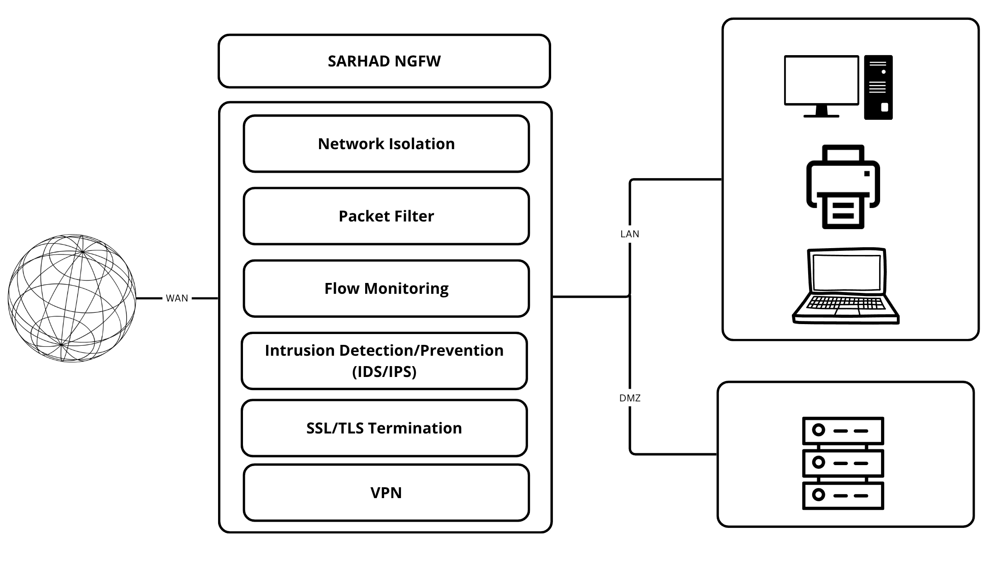
Sarhad NGFW — yuqori unumdorlikka ega yangi avlod tarmoq xavfsizlik devori.
Barcha sozlamalar HTTPS veb-interfeysi (https://<ip>:8443) orqali
boshqariladi. Bu bo’lim qurilmani birinchi marta ishga tushirish uchun
asosiy qadamlarni ketma-ket ko’rsatadi.
Qurilma birinchi marta yoqilganda boshqaruv (MGMT) interfeysiga IP manzil berish kerak. Buni qurilmaga ulangan fizik konsol (monitor/klaviatura) orqali bajaring: konsol menyusida IP manzil va niqobni kiriting.
So’ngra shu tarmoqdagi kompyuter brauzeridan boshqaruv panelini oching:
https://<mgmt-ip>:8443
Litsenziya o’rnatilmagan bo’lsa, tizim avtomatik /license sahifasini
ko’rsatadi. Qurilmaning Machine ID sini nusxalab, yetkazib beruvchidan
litsenziya kalitini oling va uni faollashtiring.
Batafsil: Litsenziya va faollashtirish.
Standart hisob (admin / admin123) bilan kiring va birinchi ishda
root va admin parollarini darhol o’zgartiring.
Batafsil: Tizimga kirish, Foydalanuvchilarni boshqarish.
Tarmoq interfeyslariga zona (WAN/LAN/DMZ) tayinlang va IP manzillarni bering. WAN — internet tomon, LAN — ichki tarmoq.
Batafsil: Tarmoq interfeyslarini sozlash va boshqarish.
Internetga chiqish uchun standart marshrut (default gateway) qo’shing va ichki tarmoq internetga chiqishi uchun NAT (SNAT) ni sozlang.
Batafsil: Marshrutlash (Routing), NAT (Manzil almashtirish).
Tarmoqlar o’rtasidagi trafikni boshqarish uchun firewall qoidalarini yarating. Zonalar o’rtasidagi asosiy qoidalar avtomatik yaratiladi, qolganini o’zingiz qo’shasiz.
Batafsil: Firewall qoidalari (Firewall Policies / ACL).
Asosiy tarmoq ishlaganidan so’ng kerakli qo’shimcha funksiyalarni yoqing:
Masofaviy xodimlar uchun VPN: VPN — Umumiy ko’rinish (Dashboard)
Hujumlarni aniqlash va oldini olish: Hujumlarni aniqlash va oldini olish (IDS/IPS)
IP manzillarni avtomatik tarqatish: DHCP server
Qo’llanma quyidagi bo’limlardan iborat:
Bo’lim |
Mazmuni |
|---|---|
Kirish |
Tizimga kirish, Dashboard va litsenziya. |
Tarmoq sozlamalari |
Interfeyslar, marshrutlash, NAT, DHCP. |
Firewall qoidalari |
ACL qoidalari, MAC filtr, trafik cheklash (Policer). |
Xavfsizlik |
IDS/IPS, TLS tekshiruvi, sertifikatlar (PKI). |
VPN |
Remote Access, Site-to-Site va umumiy sozlamalar. |
Tizim sozlamalari |
Foydalanuvchilarni boshqarish. |
Monitoring |
Jurnallar va trafik monitoringi. |
Tip
Har bir sozlash bosqichidan so’ng yuqori paneldagi Konfiguratsiyani saqlash tugmasini bosing — shunda o’zgarishlar qurilma qayta ishga tushganidan keyin ham saqlanib qoladi.
Sarhad NGFW litsenziyalangan mahsulot bo’lib, boshqaruv interfeysidan foydalanish uchun amaldagi litsenziya talab qilinadi. Litsenziya har bir qurilmaga alohida bog’lanadi va internetsiz (offline) tekshiriladi.
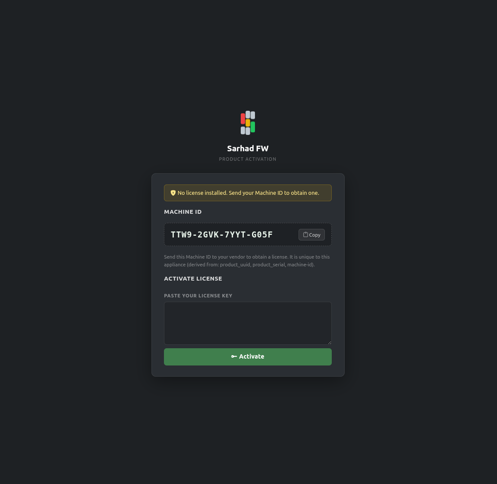
Har bir qurilma o’zining noyob Machine ID (qurilma identifikatori) sini
hisoblaydi. U asbob-uskuna (anakart, tizim) ma’lumotlaridan kelib chiqadi va
XXXX-XXXX-XXXX-XXXX ko’rinishida ko’rsatiladi.
Litsenziya aynan shu Machine ID ga bog’lab beriladi va boshqa qurilmada ishlamaydi.
Tizim litsenziyani to’liq oflayn tekshiradi — hech qanday litsenziya serveriga ulanish shart emas.
Litsenziya amal qilmagunicha, boshqaruv paneli faqat faollashtirish
sahifasini (/license) ko’rsatadi; qolgan barcha bo’limlar yopiq bo’ladi.
Litsenziyani faollashtirish tizimga kirishdan oldin bajariladi. Qurilma
litsenziyalanmaguncha, kirish (login) sahifasi ham ochilmaydi — brauzer
har qanday manzilda faqat /license faollashtirish sahifasini ko’rsatadi.
Brauzerda boshqaruv manzilini oching — litsenziya o’rnatilmagan bo’lsa,
avtomatik ravishda /license sahifasi ochiladi.
Sahifada ko’rsatilgan Machine ID ni nusxalang.
Bu Machine ID ni mahsulot yetkazib beruvchiga (vendor) yuboring.
Yetkazib beruvchi sizning qurilmangiz uchun litsenziya kalitini (token) yaratib beradi.
Olingan litsenziya kalitini sahifadagi maydonga joylang va Faollashtirish (Activate) tugmasini bosing.
Litsenziya to’g’ri bo’lsa, tizim ochiladi va endi siz tizimga kirishingiz (login) hamda barcha bo’limlardan foydalanishingiz mumkin (qarang: Tizimga kirish).
Litsenziya ikki turda bo’lishi mumkin:
Muddatli (time-boxed) — belgilangan kunlardan keyin amal qilishi tugaydi. Muddat tugashidan oldin yangi litsenziya bilan uzaytirish kerak.
Doimiy (perpetual) — muddati cheklanmagan.
Litsenziya holatini (amal qilish muddati, xususiyatlar) /license sahifasida
ko’rishingiz mumkin.
Muddatli litsenziyani uzaytirish uchun yetkazib beruvchidan yangi litsenziya
kaliti oling va uni /license sahifasida joylang. Buni joriy litsenziya
hali amal qilayotgan paytda bajarish mumkin.
Note
Anakartni almashtirish yoki operatsion tizimni qayta o’rnatish Machine ID ni o’zgartiradi — bu holda mavjud litsenziya ishlamay qoladi va yangi Machine ID uchun yangi litsenziya kerak bo’ladi.
Sarhad NGFW boshqaruvi veb-brauzer orqali amalga oshiriladi. Kirish sahifasi manzili:
https://<ip>:8443/login
Masalan: https://192.168.1.1:8443/login

Tizimda standart (bootstrap) holatda ikkita hisob yaratiladi. Ikkalasining ham boshlang’ich paroli bir xil:
Foydalanuvchi nomi |
Parol |
Rol |
|---|---|---|
|
|
root (to’liq huquq) |
|
|
admin (boshqaruv) |
readonly rolidagi hisoblar standart holda yaratilmaydi — ularni root yoki
admin qo’lda qo’shadi (qarang: Foydalanuvchilarni boshqarish).
Warning
Birinchi kirishdan so’ng ikkala hisobning (root va admin)
standart parolini darhol o’zgartiring — aks holda tizim jiddiy xavf
ostida qoladi.
Tizimda uchta rol mavjud:
Barcha huquqlarga ega: tizimni to’liq boshqarish, konfiguratsiyani o’zgartirish, foydalanuvchilar va litsenziyani boshqarish.
Konfiguratsiyani ko’rish va o’zgartirish hamda foydalanuvchilarni boshqarish huquqiga ega. Ayrim tizim darajasidagi amallar faqat root uchun.
Faqat ko’rish huquqi: tizim holati, statistika va hisobotlarni ko’radi, lekin sozlamalarni o’zgartira olmaydi.
Tizimga muvaffaqiyatli kirgandan so’ng siz avtomatik ravishda Dashboard sahifasiga o’tasiz. Bu — boshqaruv panelining bosh sahifasi bo’lib, qurilmaning umumiy holatini va tarmoq faoliyatini bir qarashda ko’rish imkonini beradi. Sahifadagi ma’lumotlar real vaqtda, har necha soniyada avtomatik yangilanib turadi.

Sahifaning yuqori qismida qurilmaning asosiy holati to’rtta karta ko’rinishida ko’rsatiladi:
Ko’rsatkich |
Nimani bildiradi |
|---|---|
Active Interfaces (Faol interfeyslar) |
Ayni paytda faol (UP holatdagi) tarmoq interfeyslari soni. |
CPU Usage (CPU yuki) |
Protsessorning band qilingan qismi (foizda). Doimiy yuqori qiymat qurilma chegaraga yaqinlashayotganini bildiradi. |
Memory Usage (Xotira) |
Ishlatilayotgan operativ xotira (RAM) miqdori. |
System Uptime (Ish vaqti) |
Qurilma oxirgi qayta ishga tushishidan beri uzluksiz qancha vaqt ishlayotganini ko’rsatadi. |
Kartalardan pastda tarmoq trafigi ikki ko’rinishda taqdim etiladi.
Trafik grafiklari — interfeyslar bo’yicha trafikning vaqt davomida o’zgarishini ko’rsatadigan real vaqtdagi grafiklar. Ular orqali qaysi interfeys qancha yuklanganini va trafikdagi keskin o’zgarishlarni (masalan, kutilmagan burstlarni) tezda payqash mumkin.
Interface Statistics jadvali — har bir interfeys uchun aniq raqamli ko’rsatkichlar:
Ustun |
Tavsifi |
|---|---|
RX Bytes / TX Bytes |
Qabul qilingan (RX) va yuborilgan (TX) ma’lumot hajmi (baytlarda). |
RX Pkts / TX Pkts |
Qabul qilingan va yuborilgan paketlar soni. |
Drops |
Tashlab yuborilgan (qabul qilinmagan) paketlar soni. Yuqori qiymat tarmoqda muammo borligidan dalolat berishi mumkin. |
Bu bo’limda Sarhad NGFW tizimida tarmoq interfeyslarini ko’rish, sozlash
va boshqarish bo’yicha to’liq qo’llanma keltirilgan. Interfeyslar bo’limiga
o’tish uchun chap menyudagi Network → Interfaces bo’limini tanlang
(/interfaces).
Sarhad NGFW ikki turdagi tarmoq interfeyslarini boshqaradi:
MGMT (boshqaruv) interfeysi — tizimni boshqarish uchun ajratilgan
interfeys. Boshqaruv veb-paneli (https://<ip>:8443) aynan shu interfeys
orqali ochiladi. Bu interfeys himoyalangan: uni ma’lumotlar interfeysiga
aylantirib bo’lmaydi, shu sababli boshqaruv aloqasi hech qachon uzilmaydi.
Ma’lumotlar interfeyslari — tarmoq trafigini tashuvchi interfeyslar. Tarmoq trafigi aynan shu interfeyslar orqali filtrlanadi, marshrutlanadi va himoyalanadi.

Har bir ma’lumotlar interfeysiga zona (rol) tayinlanadi. Zona interfeysning xavfsizlik darajasini va unga avtomatik qo’llaniladigan qoidalarni belgilaydi:
Zona |
Tavsifi |
|---|---|
WAN |
Tashqi (internet) tomonga ulangan interfeys. Eng past ishonch darajasiga ega. Odatda NAT va kiruvchi trafikni cheklash shu interfeysga qo’llaniladi. |
LAN |
Ichki (lokal) tarmoq interfeysi. Yuqori ishonch darajasiga ega ishonchli foydalanuvchilar tarmog’i. |
DMZ |
Demilitarizatsiya zonasi — tashqaridan ko’rinadigan serverlar (veb, pochta) uchun oraliq xavfsizlik zonasi. |
MGMT |
Boshqaruv interfeysi. Faqat tizimni boshqarish uchun ishlatiladi. |
Zonalar o’rtasidagi trafik uchun tizim asosiy ruxsat/taqiq qoidalarini (zone ACL) avtomatik yaratadi. Masalan, LAN’dan WAN’ga chiquvchi trafik odatda ruxsat etiladi, WAN’dan LAN’ga kiruvchi trafik esa standart holatda bloklanadi.
Interfeyslar sahifasida har bir interfeys uchun quyidagi ma’lumotlar ko’rsatiladi:
Interfeys nomi (masalan, GigabitEthernet0/8/0) va foydalanuvchi bergan
taxallus (alias).
Holati: UP (faol) yoki DOWN (o’chiq).
Tayinlangan zona (WAN/LAN/DMZ/MGMT).
IP manzil(lar)i va tarmoq niqobi (subnet mask).
MAC manzili va interfeys turi.
Real vaqtdagi statistika: qabul qilingan (RX) va yuborilgan (TX) baytlar, paketlar va tashlab yuborilgan (drop) paketlar soni.
Statistika har soniyada avtomatik yangilanib turadi.
Interfeysni sozlash uchun ro’yxatdagi kerakli interfeys qatorini ikki marta bosing (double-click) — interfeysning sozlash oynasi ochiladi.

Sozlash oynasida quyidagi parametrlarni o’zgartirishingiz mumkin:
Interfeysga WAN, LAN yoki DMZ zonasini tanlang. Zona o’zgarganda tizim shu interfeysga tegishli avtomatik xavfsizlik qoidalarini qaytadan hisoblaydi.
Interfeysga manzil ikki usulda beriladi:
Statik IP — qo’lda kiritilgan IP manzil va niqob (masalan,
192.168.10.1/24). Bir interfeysga bir nechta IP manzil qo’shish mumkin.
DHCP mijozi (DHCP client) — interfeys manzilni tashqi DHCP serverdan avtomatik oladi. Odatda WAN interfeysi internet-provayderdan manzil olishi uchun ishlatiladi.
IP manzilni kiritib, Saqlash (Save) tugmasini bosing.
Interfeysni UP (yoqilgan) yoki DOWN (o’chirilgan) holatiga o’tkazishingiz mumkin. Texnik xizmat ko’rsatish paytida interfeysni vaqtincha o’chirib qo’yish qulay.
Har bir interfeysga eslab qolish oson bo’lgan nom berishingiz mumkin
(masalan, Internet-WAN yoki Ofis-LAN). Bu nom barcha sahifalarda
ko’rsatiladi va tizim qayta ishga tushganidan keyin ham saqlanib qoladi.
VLAN (Virtual LAN, 802.1Q) bir fizik interfeysni bir nechta mantiqiy tarmoqqa bo’lish imkonini beradi. VLAN qo’shish uchun VLAN qo’shish (Add VLAN) tugmasini bosing.
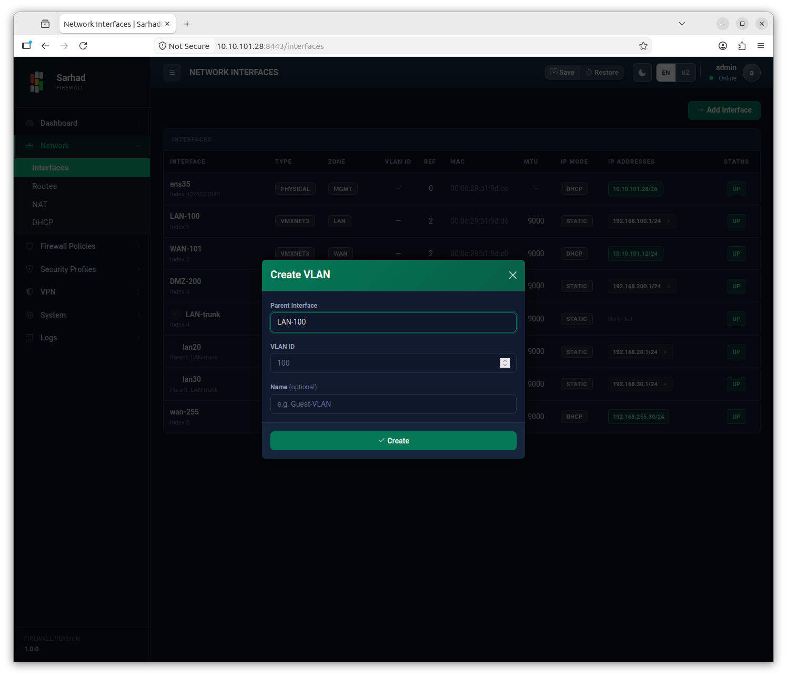
Quyidagi maydonlarni to’ldiring:
Asosiy interfeys (Parent interface) — VLAN qaysi fizik interfeys ustida yaratilishini tanlang.
VLAN ID — 1 dan 4094 gacha bo’lgan tartib raqami (masalan, 100).
IP manzil — VLAN interfeysining manzili (ixtiyoriy).
VLAN yaratilgach, u alohida interfeys sifatida ro’yxatda paydo bo’ladi va unga zona hamda qoidalar tayinlanishi mumkin.
Note
Boshqaruv (MGMT) interfeysini o’zgartirishda ehtiyot bo’ling. Agar boshqaruv interfeysining IP manzili noto’g’ri o’zgartirilsa, veb-panelga ulanish yo’qolishi mumkin. Bunday holatda fizik konsol (tty1) orqali IP manzilni qayta sozlash kerak bo’ladi.
Tip
Barcha o’zgarishlarni kiritgandan so’ng yuqori paneldagi Konfiguratsiyani saqlash tugmasini bosing — shunda sozlamalar tizim qayta ishga tushganidan keyin ham saqlanib qoladi.
Marshrutlash bo’limi tarmoq paketlari qaysi yo’nalish (interfeys yoki
keyingi tugun — next-hop) orqali yuborilishini belgilaydi. Bu bo’limga
o’tish uchun chap menyudagi Network → Routes bo’limini tanlang
(/routes).
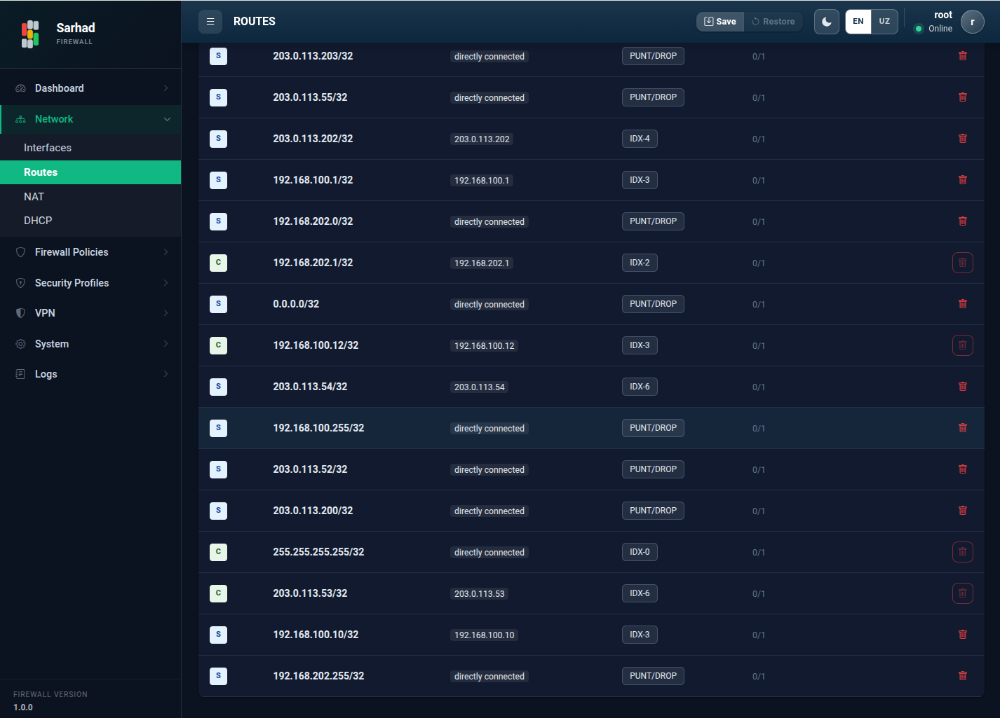
Sahifaning asosiy qismida joriy marshrutlash jadvali (FIB) ko’rsatiladi. Har bir yozuv quyidagi ustunlardan iborat:
Ustun |
Tavsifi |
|---|---|
Manzil tarmog’i (Destination) |
Marshrut qaysi tarmoqqa tegishli ekani, CIDR ko’rinishida
(masalan, |
Keyingi tugun (Next-hop) |
Paket yuboriladigan keyingi gateway IP manzili
(masalan, |
Chiquvchi interfeys (Interface) |
Paket qaysi interfeys orqali chiqib ketishi. |
Manba (Protocol) |
Marshrut qanday paydo bo’lgani: statik (qo’lda kiritilgan) yoki ulangan (connected — interfeys IP manzilidan kelib chiqqan). |
Yangi marshrut qo’shish uchun Marshrut qo’shish (Add Route) tugmasini bosing va quyidagi maydonlarni to’ldiring:
Manzil tarmog’i — yo’naltirilishi kerak bo’lgan tarmoq, CIDR ko’rinishida
(masalan, 172.16.0.0/24).
Keyingi tugun (Next-hop) — paket yuboriladigan gateway IP manzili.
Interfeys — (ixtiyoriy) paket chiqishi kerak bo’lgan aniq interfeys.
So’ngra Saqlash (Save) tugmasini bosing. Marshrut darhol kuchga kiradi va jadvalda paydo bo’ladi.
Internetga chiqish uchun odatda standart marshrut sozlanadi:
Manzil tarmog’i: 0.0.0.0/0
Keyingi tugun: internet-provayder gateway manzili (yoki WAN interfeys gateway).
Agar WAN interfeysi DHCP orqali manzil olsa, standart marshrut ko’pincha avtomatik tarzda qo’shiladi.
Marshrutni jadvaldan o’chirish uchun kerakli yozuv yonidagi O’chirish (Delete) tugmasini bosing. Ulangan (connected) marshrutlarni qo’lda o’chirib bo’lmaydi — ular interfeys IP manzili o’zgarganda yoki o’chirilganda avtomatik yangilanib turadi.
Note
Marshrutlash faqat paketning yo’nalishini belgilaydi. Trafikning ruxsat etilishi yoki bloklanishi esa firewall qoidalari (ACL) orqali nazorat qilinadi. To’liq ishlashi uchun marshrut va firewall qoidalari birga sozlanishi kerak.
NAT (Network Address Translation — tarmoq manzilini almashtirish) ichki
tarmoqdagi xususiy IP manzillarni tashqi (ommaviy) IP manzilga aylantirish
imkonini beradi. Bu bo’limga o’tish uchun chap menyudan Network → NAT
bo’limini tanlang (/nat).
NAT sahifasi ikkita tabdan iborat:
NAT — Source NAT holati va DNAT (port forwarding) qoidalarini sozlash.
Active Sessions — faol NAT ulanishlarini ko’rish va vaqt chegaralarini (timeouts) sozlash.
Sarhad NGFW quyidagi NAT rejimlarini qo’llab-quvvatlaydi:
Source NAT (SNAT) — ichki tarmoqdan internetga chiquvchi trafikning manba (source) manzilini WAN manziliga almashtiradi. Bu eng keng tarqalgan rejim bo’lib, ichki foydalanuvchilar bitta ommaviy IP orqali internetga chiqadi.
Destination NAT (DNAT) — tashqaridan kelgan trafikni ichki serverga yo’naltiradi (port forwarding). Masalan, WAN’ning 443-portiga kelgan trafik ichki veb-serverga uzatiladi.
NAT interfeys rollari (ichki/tashqi) qo’lda tanlanmaydi — ular har bir interfeysga berilgan zona asosida avtomatik belgilanadi:
WAN zonasi → tashqi (outside) interfeys.
LAN yoki DMZ zonasi → ichki (inside) interfeys.
Shu sababli NAT’ni ishlatish uchun avval interfeyslarga to’g’ri zonani bering (qarang: Tarmoq interfeyslarini sozlash va boshqarish). Zona o’zgartirilsa, NAT rollari ham avtomatik yangilanadi.

Source NAT bo’limida tizim ichki (LAN/DMZ) va tashqi (WAN) interfeyslarni hamda manzillar ro’yxatini (address pool) zonalar asosida avtomatik ko’rsatadi.
Static Mappings (DNAT / port forwarding) bo’limida tashqaridan ichki serverga kirishni ochuvchi qoidalar yaratiladi:
New Mapping tugmasini bosing.
Quyidagilarni kiriting:
Protocol — TCP, UDP, ICMP yoki “barchasi” (any).
Label — qoidaning tushunarli nomi (masalan, Veb-server).
External IP / External Port — tashqi (WAN) manzil va port
(masalan, 203.0.113.5 : 443).
Local IP / Local Port — paket yo’naltiriladigan ichki server manzili
va porti (masalan, 192.168.10.20 : 443).
Saqlash (Save) tugmasini bosing.
Qoida darhol kuchga kiradi va ro’yxatda paydo bo’ladi.
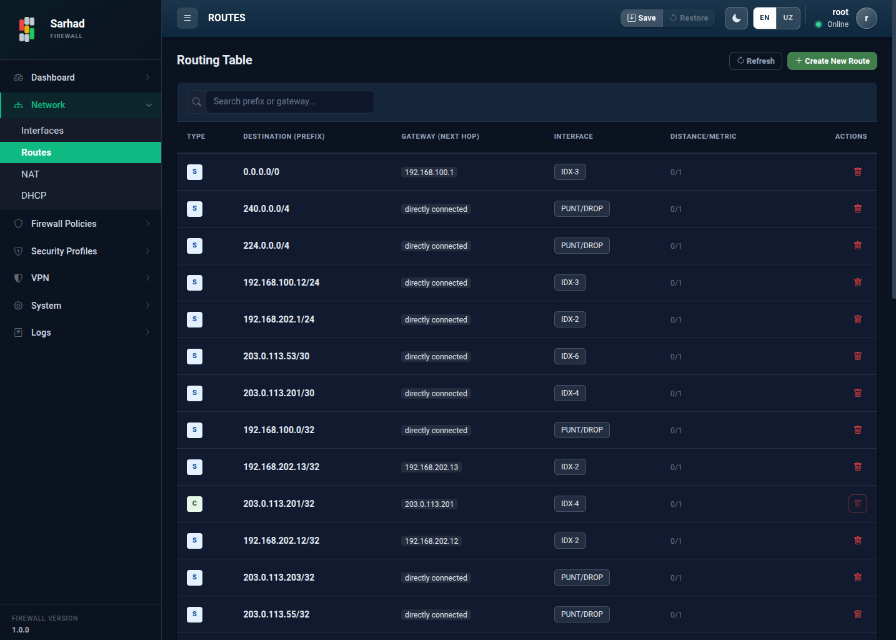
Bu tabda NAT trafigini kuzatish va vaqt chegaralarini sozlash mumkin.
Sessiyaning bo’sh turish vaqti (sekundlarda) protokol turi bo’yicha sozlanadi:
UDP — UDP sessiyalari uchun.
TCP established — o’rnatilgan TCP ulanishlari uchun.
TCP transitory — o’rnatilayotgan (yarim ochiq) TCP ulanishlari uchun.
ICMP — ICMP (ping) trafigi uchun.
Qiymatlarni kiritib, Save timeouts tugmasini bosing.
Ayni paytda faol bo’lgan barcha NAT ulanishlari jadvalda ko’rsatiladi: protokol, ichki (Inside/Local) va tashqi (Outside/NAT) manzillar. Sessiyalarni IP bo’yicha qidirish, shuningdek alohida yoki barcha sessiyalarni tozalash (Clear all) mumkin.
Bundan tashqari, User traffic summary jadvalida har bir ichki IP bo’yicha sessiyalar soni, paketlar va umumiy trafik hajmi ko’rsatiladi.
Note
NAT qoidalari firewall qoidalari bilan birga ishlaydi. DNAT qoidasi trafikni ichki serverga yo’naltirsa ham, trafik o’tishi uchun firewall’da mos ruxsat qoidasi ham bo’lishi shart (qarang: Firewall qoidalari (Firewall Policies / ACL)).
DHCP (Dynamic Host Configuration Protocol) tarmoqdagi qurilmalarga IP
manzillarni avtomatik tarqatish imkonini beradi. Bu bo’limga o’tish uchun chap
menyudan Network → DHCP Server bo’limini tanlang (/dhcp-server).

DHCP qoidasini yaratish juda sodda — interfeys tanlanadi va IP manzillar oralig’i kiritiladi. Tarmoq (subnet) va shlyuz (gateway) interfeysning o’z IP manzilidan avtomatik olinadi, ularni qo’lda kiritish shart emas.
Add rule tugmasini bosing.
Quyidagilarni belgilang:
Interface — DHCP xizmati ishlaydigan interfeysni tanlang.
IP range — tarqatiladigan manzillar oralig’i
(masalan, 20.20.20.10-20.20.20.200).
Saqlash (Save) tugmasini bosing.
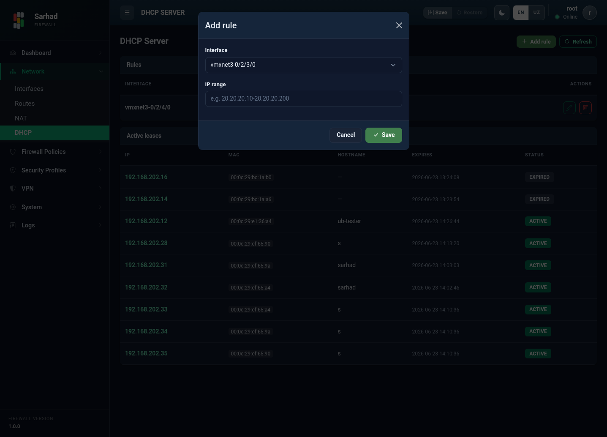
Qo’shilgan qoidalar Rules jadvalida interfeys va IP oralig’i bilan ko’rsatiladi. Qoidani keyinchalik tahrirlash yoki o’chirish mumkin.
Active leases bo’limida ayni paytda qurilmalarga berilgan IP manzillar ro’yxati ko’rsatiladi:
IP — qurilmaga berilgan manzil.
MAC — qurilmaning fizik manzili.
Hostname — qurilma nomi.
Expires — manzilning amal qilish muddati tugash vaqti.
Status — manzil holati.
Shu orqali tarmoqqa ulangan qurilmalarni kuzatib borish mumkin.
DHCP serverni interfeysning sozlash oynasidan ham yoqish mumkin (qarang: Tarmoq interfeyslarini sozlash va boshqarish):
Interfeys qatorini ikki marta bosib, sozlash oynasini oching.
DHCP Server tugmachasini yoqing.
IP Range maydoniga manzillar oralig’ini kiriting — tarmoq va shlyuz interfeys IP manzilidan avtomatik aniqlanadi va oynada ko’rsatiladi.
Saqlash tugmasini bosing.
Firewall qoidalari tarmoq trafigining qaysi qismiga ruxsat berilishini (permit)
yoki bloklanishini (deny) belgilaydi. Sarhad NGFW da bu qoidalar
siyosatlar (policies) sifatida boshqariladi va interfeyslarga avtomatik
qo’llaniladi. Ushbu bo’limga o’tish uchun chap menyudagi
Firewall → ACL bo’limini tanlang (/acl).
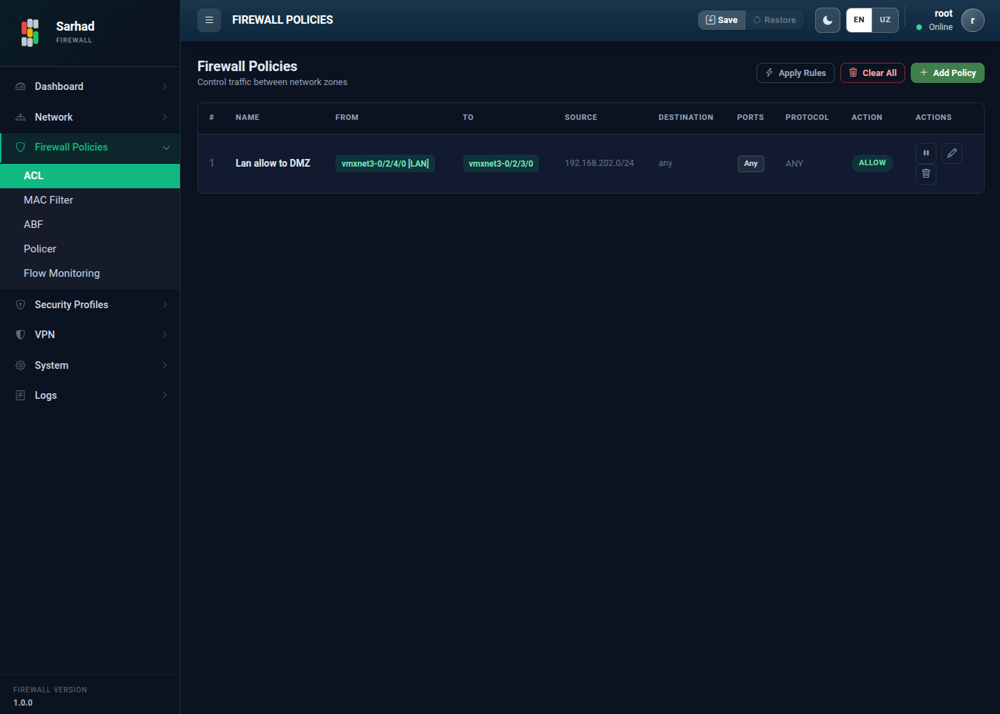
Har bir siyosat (policy) — bu nomlangan va tartiblangan qoida bo’lib, trafik uning belgilariga mos kelganda tegishli amalni bajaradi.
Qoidalar yuqoridan pastga qarab tekshiriladi. Trafik birinchi mos kelgan qoidaning amaliga (permit yoki deny) bo’ysunadi, keyingi qoidalar tekshirilmaydi.
Ro’yxat oxirida yashirin “barchasini taqiqlash” (implicit deny) qoidasi amal qiladi: hech bir qoidaga mos kelmagan trafik bloklanadi.
Bundan tashqari, zonalar (WAN/LAN/DMZ) o’rtasidagi trafik uchun tizim zona qoidalarini avtomatik yaratadi.
Har bir firewall qoidasi quyidagi maydonlardan iborat:
Maydon |
Tavsifi |
|---|---|
Nom (Name) |
Qoidaning tushunarli nomi (masalan, |
Yo’nalish (From / To) |
Trafik qayerdan (From — kiruvchi) va qayerga (To — chiquvchi) yo’nalishi. |
Manba (Source) |
Trafik qayerdan kelishi: |
Manzil (Destination) |
Trafik qayerga borishi: |
Protokol (Protocol) |
TCP, UDP, ICMP yoki “barchasi” (any). |
Portlar (Ports) |
Manzil portlari (masalan, |
Amal (Action) |
|
Tartib (Order) |
Qoidaning tekshirilish tartibi. Raqam qancha kichik bo’lsa, qoida shuncha
oldin tekshiriladi ( |
Holati (Enabled) |
Qoida yoqilgan yoki o’chirilgan. O’chirilgan qoida ro’yxatdan olib tashlanmasdan vaqtincha ishlamay turadi. |
Add Policy tugmasini bosing.
Yuqorida keltirilgan maydonlarni to’ldiring.
Amalni (Permit yoki Deny) tanlang.
Saqlash (Save) tugmasini bosing.
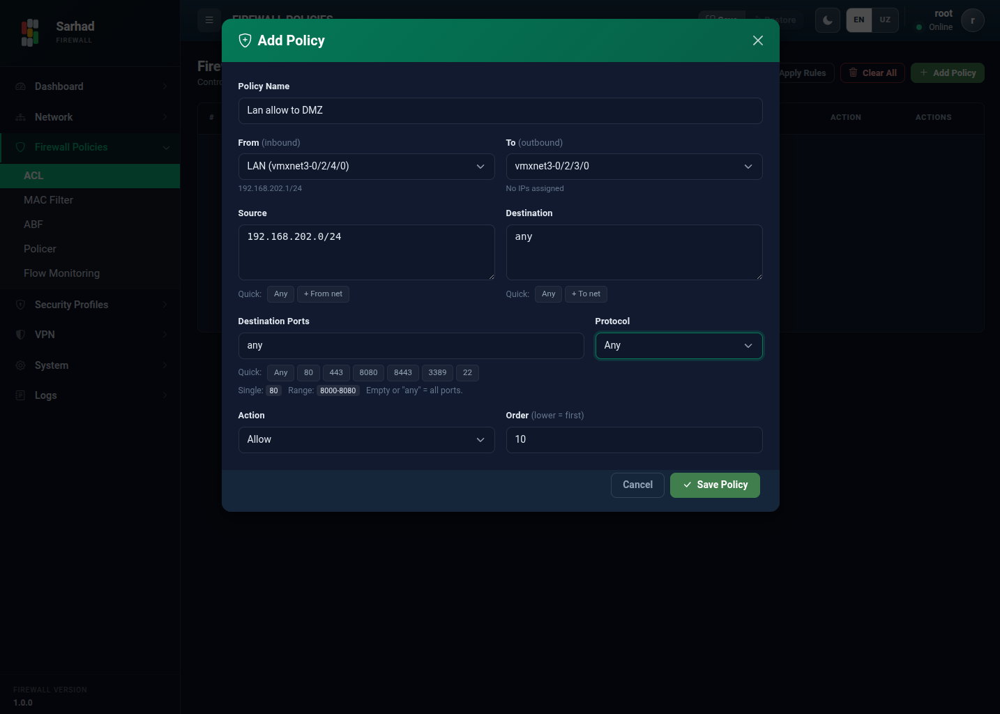
Qoidalarni qo’shib yoki o’zgartirib bo’lgach, ularni kuchga kiritish uchun Apply rules tugmasini bosing — shundan so’ng qoidalar interfeyslarga qo’llaniladi.
Warning
Qoidani saqlash (Save) — uni faqat ro’yxatga qo’shadi, lekin hali ishga tushirmaydi. Apply rules tugmasi bosilmaguncha qoidalar ishlamaydi. Har qanday o’zgarish (qo’shish, tahrirlash, o’chirish, yoqish/o’chirish yoki tartibni o’zgartirish) dan so’ng Apply rules tugmasini bosishni unutmang.
Nom: HTTPS ruxsat
Amal: Permit
Manba: any (istalgan manzil)
Manzil: 192.168.10.20 (ichki veb-server)
Protokol: TCP
Manzil porti: 443
Qoidalar tartibi muhim, chunki trafik birinchi mos kelgan qoidaga bo’ysunadi.
Tartib Order maydoni orqali belgilanadi: bu raqam qancha kichik bo’lsa,
qoida shuncha oldin tekshiriladi (lower = first). Tartibni o’zgartirish
uchun qoidani tahrirlab, uning Order qiymatini o’zgartiring.
Tip
Aniqroq (spetsifik) qoidalarga kichikroq Order raqamini bering, shunda ular umumiyroq qoidalardan oldin tekshiriladi. Masalan, “bitta IP’ni bloklash” qoidasiga “butun tarmoqqa ruxsat berish” qoidasidan kichikroq Order qiymatini qo’ying.
Tahrirlash (Edit) — mavjud qoidaning parametrlarini o’zgartirish.
O’chirish (Delete) — qoidani butunlay olib tashlash.
Yoqish/O’chirish (Enable/Disable) — qoidani o’chirmasdan vaqtincha faolsizlantirish.
MAC manzillari bo’yicha filtrlash: MAC manzili bo’yicha filtrlash
Trafik tezligini cheklash: Trafik tezligini cheklash (Traffic Policing / QoS)
MAC filtrlash qurilmaning fizik (MAC) manzili asosida uning tarmoqqa kirishiga
ruxsat berish yoki uni taqiqlash imkonini beradi. IP manzildan farqli ravishda,
bu nazorat usuli qurilmaning o’ziga (tarmoq adapteriga) bog’langan. Ushbu
bo’limga o’tish uchun chap menyudan Firewall → MAC Filter bo’limini tanlang
(/mac-filter).
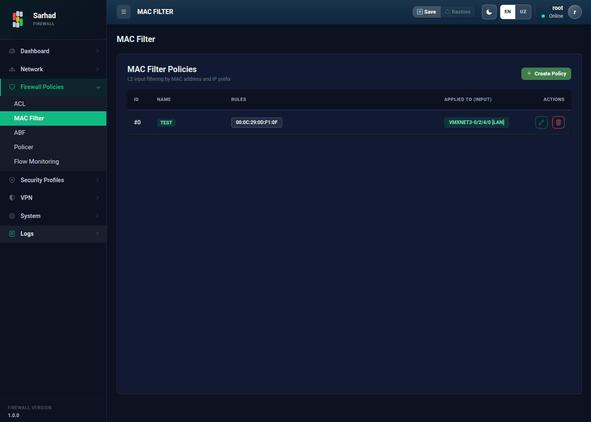
MAC filtrlash quyidagi holatlarda foydali bo’ladi:
Faqat ma’lum (ro’yxatga olingan) qurilmalarga tarmoqqa ulanishga ruxsat berish.
Aniq bir qurilmani (masalan, ruxsatsiz noutbukni) tarmoqdan bloklash.
Anti-spoofing — ma’lum bir MAC manzilni faqat ma’lum IP manzil bilan ishlashga majburlash (IP yoki MAC’ni soxtalashtirishning oldini olish).
MAC filtrlash siyosatlar (policies) asosida ishlaydi. Har bir siyosat:
nomga ega bo’ladi;
bir yoki bir nechta interfeysga (kiruvchi — input yo’nalishda) qo’llaniladi;
ichida bir yoki bir nechta qoida (rule) saqlaydi.
MAC Filter Policies jadvalida har bir siyosatning ID raqami, nomi, qoidalari soni va qo’llanilgan interfeyslari ko’rsatiladi.
Create Policy tugmasini bosing.
Policy Name maydoniga siyosat nomini kiriting
(masalan, anti-spoof-lan).
Apply to interfaces (input direction) bo’limida siyosat qo’llaniladigan interfeyslarni tanlab, Add tugmasi bilan qo’shing.
Rules bo’limida Add Rule tugmasi orqali bir yoki bir nechta qoida qo’shing (quyida).
Save tugmasini bosing.
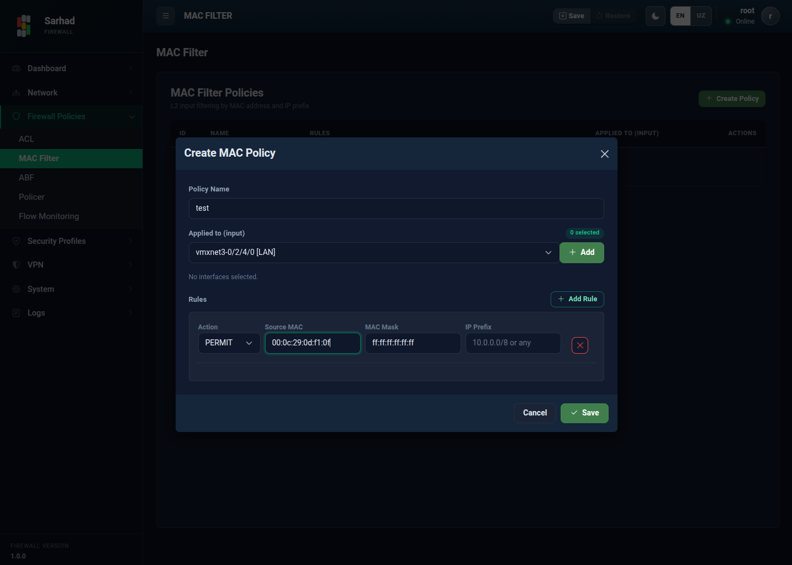
Har bir qoida quyidagi maydonlardan iborat:
Maydon |
Tavsifi |
|---|---|
Action |
|
Source MAC |
Qurilmaning fizik manzili (masalan, |
MAC Mask |
MAC manzilning qaysi qismi solishtirilishini belgilovchi niqob (bir guruh MAC’ni qamrab olish uchun ishlatiladi). |
IP Prefix |
Shu MAC bog’lanadigan IP tarmoq (masalan, |
Bir siyosat ichidagi qoidalar yuqoridan pastga tekshiriladi va trafik birinchi mos kelgan qoidaga bo’ysunadi. Ikkita asosiy strategiya mavjud:
Oq ro’yxat (whitelist) — ruxsat etilgan MAC’larga PERMIT qoidalari
beriladi, qolganlari esa bloklanadi. Bu eng xavfsiz usul, biroq har bir yangi
qurilmani qo’lda qo’shish talab etiladi.
Qora ro’yxat (blacklist) — faqat ayrim qurilmalarga DENY qoidasi
beriladi, qolganlariga ruxsat etiladi.
Note
Ba’zi qurilmalarda MAC manzilini almashtirish (spoofing) mumkin, shuning uchun MAC filtrlashni yagona himoya chorasi sifatida emas, balki qo’shimcha xavfsizlik qatlami sifatida ishlatish tavsiya etiladi. Anti-spoofing uchun MAC bilan birga IP Prefix ni ham belgilang.
ABF (Access-Based Forwarding) — bu siyosatga asoslangan marshrutlash
(policy-based routing). Oddiy marshrutlash faqat manzil (destination) IP’ga
qarab yo’l tanlaydi; ABF esa trafikni boshqa belgilari (manba IP, port,
protokol) bo’yicha tanlab, uni maxsus keyingi tugunga (next-hop) yo’naltirish
imkonini beradi. Ushbu bo’limga o’tish uchun chap menyudan Firewall → ABF
bo’limini tanlang (/abf).
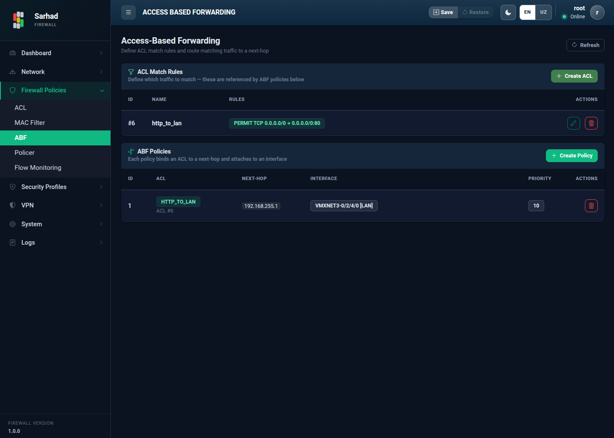
ABF quyidagi holatlarda foydali bo’ladi:
Ma’lum bir tarmoq yoki foydalanuvchilar trafigini boshqa kanal (masalan, ikkinchi internet provayder) orqali yuborish.
Ayrim ilovalar trafigini alohida yo’nalishga ajratish.
ACL Match Rule — qaysi trafikni tanlash kerakligini aniqlaydi.
ABF Policy — tanlangan trafikni qayerga (next-hop) yo’naltirishni belgilaydi va interfeysga qo’llaydi.
Create ACL tugmasini bosing.
ACL Name maydoniga nom kiriting (masalan, match-http-from-lan).
Add Rule orqali bir yoki bir nechta qoida qo’shing. Har bir qoida quyidagi maydonlardan iborat:
Maydon |
Tavsifi |
|---|---|
Action |
|
Protocol |
Any, TCP, UDP, ICMP yoki boshqa protokol raqami (0–255). |
Source IP/CIDR |
Manba tarmoq (masalan, |
Src Port |
Manba porti (yoki |
Dest IP/CIDR |
Manzil tarmoq (masalan, |
Dst Port |
Manzil porti (yoki |
Save ACL tugmasini bosing.

ABF Policy yuqorida yaratilgan ACL’ni keyingi tugun (next-hop) bilan bog’laydi va interfeysga qo’llaydi.
Create Policy tugmasini bosing.
Quyidagilarni belgilang:
ACL — qaysi trafik mos kelishini (yuqorida yaratilgan ACL).
Next-Hop IP — mos trafik yo’naltiriladigan keyingi tugun manzili
(masalan, 10.10.0.1).
Apply to Interface (input) — siyosat qo’llaniladigan interfeys (kiruvchi yo’nalishda).
Priority — siyosat ustuvorligi (bir nechta siyosat bo’lganda tartibni belgilaydi).
Create & Apply tugmasini bosing.
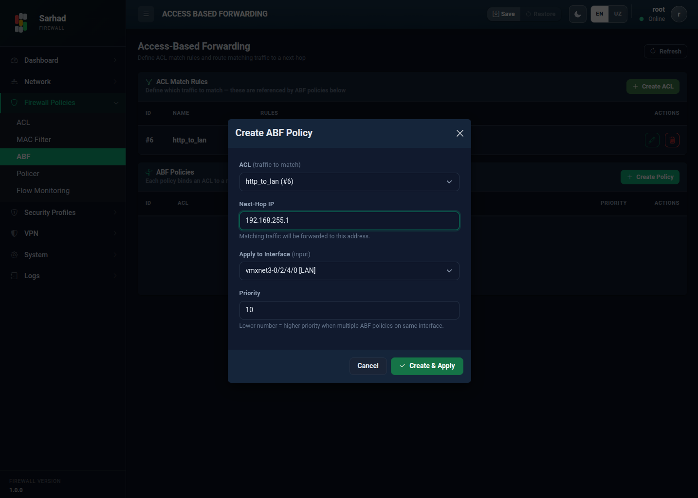
Yaratilgan siyosatlar ABF Policies jadvalida ACL, Next-Hop, interfeys va ustuvorligi bilan ko’rsatiladi.
Note
ABF tanlangan trafikni odatiy marshrutlash jadvalini chetlab o’tib, ko’rsatilgan next-hop’ga yuboradi. Shuning uchun next-hop manzili shu interfeys orqali yetib boradigan ishlaydigan manzil ekanligiga ishonch hosil qiling.
Trafik tezligini cheklash (Traffic Policing) tarmoq trafigining tezligini
(bandwidth) cheklash imkonini beradi. Bu orqali ayrim interfeyslar yoki
foydalanuvchilarning tarmoq resurslarini haddan tashqari band qilib qo’yishining
oldi olinadi. Ushbu bo’limga o’tish uchun chap menyudan Firewall → Policer
bo’limini tanlang (/policer).
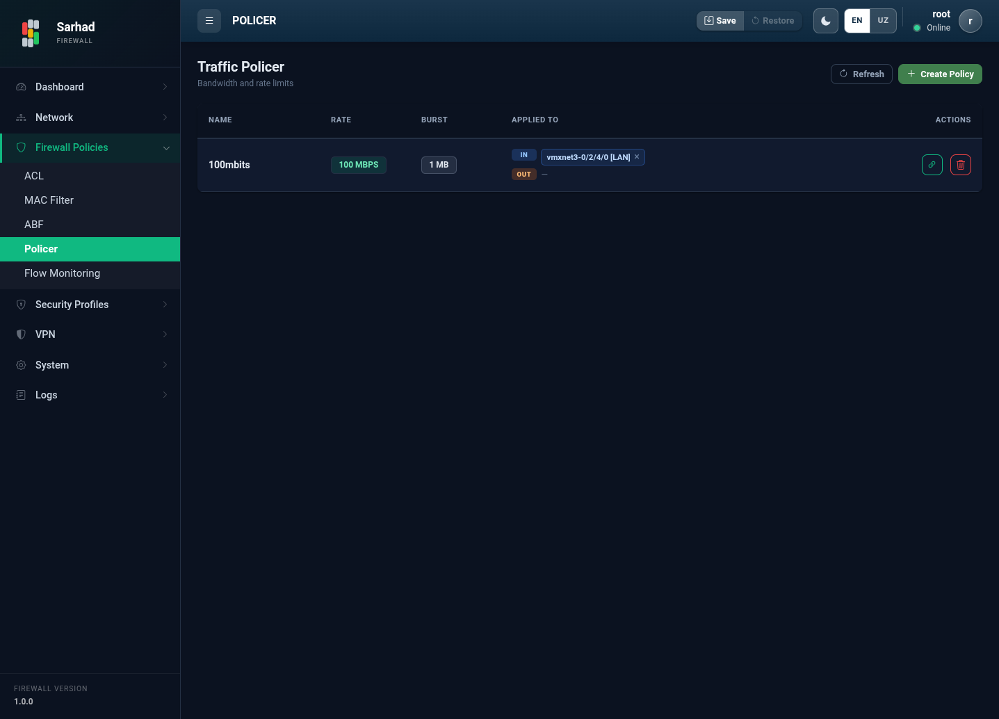
Cheklov “token bucket” (token chelaki) algoritmiga asoslanadi: agar trafik belgilangan tezlikdan oshib ketsa, ortiqcha paketlar tashlab yuboriladi. Bu interfeysga kiruvchi yoki chiquvchi trafikning maksimal tezligini nazorat qilish imkonini beradi.
Create Policy tugmasini bosing.
Quyidagi parametrlarni kiriting:
Policy Name — siyosatning tushunarli nomi
(masalan, 100Mbps-limit).
Committed Rate (CIR) — kafolatlangan o’rtacha tezlik. Qiymatni kiritib, birligini (Kbps, Mbps yoki Gbps) tanlang.
Committed Burst (CB) — bir vaqtning o’zida ruxsat etilgan maksimal burst (qisqa muddatli ortiqcha) hajmi.
Create tugmasini bosing.
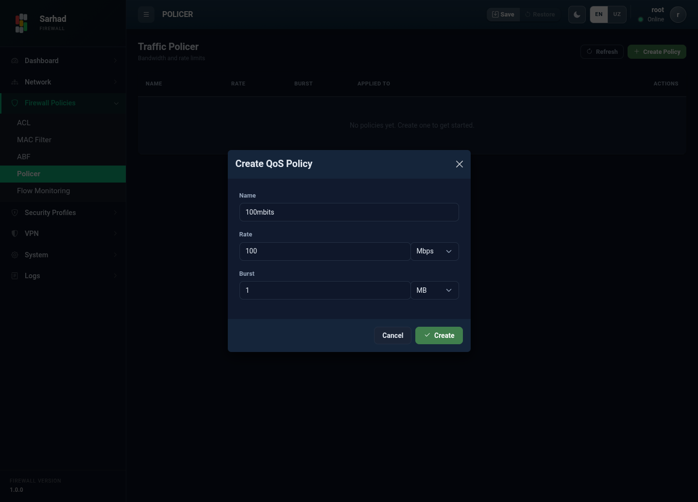
Yaratilgan siyosatlar jadvalda nomi, Rate (CIR), Burst (CB) va qo’llanilgan interfeyslari bilan ko’rsatiladi.
Siyosat yaratilgandan so’ng uni interfeysga qo’llash kerak. Buning uchun ro’yxatdagi siyosat qatorini ikki marta bosing (double-click) — qo’llash oynasi ochiladi:
Policy — qo’llaniladigan siyosat.
Interface — siyosat qaysi interfeysga qo’llanishi.
Direction — yo’nalish:
Input — interfeysga kiruvchi trafikni cheklaydi.
Output — interfeysdan chiquvchi trafikni cheklaydi.

Mehmon foydalanuvchilari tarmog’i internetning butun kanalini band qilib
qo’ymasligi uchun unga 100 Mbps cheklov qo’yish mumkin. Buning uchun
CIR = 100 Mbps bo’lgan siyosat yarating va uni mehmon interfeysiga
Output yo’nalishida qo’llang.
Note
Bu mexanizm trafikni cheklaydi (policing), lekin uni navbatga qo’yib kechiktirmaydi (shaping emas). Chegaradan oshgan paketlar darhol tashlab yuboriladi.
Sarhad NGFW tarmoqdagi shubhali va zararli faoliyatni aniqlash hamda oldini
olish uchun o’rnatilgan IDS/IPS tizimidan foydalanadi. Tizim Snort dvigateli
asosida ishlaydi, shuning uchun maxsus qoidalar Snort sintaksisida yoziladi.
Ushbu bo’limga o’tish uchun chap menyudan Security → Intrusion Prevention
bo’limini tanlang (/intrusion-prevention).
IDS (Intrusion Detection System) — hujumlarni aniqlaydi va ogohlantirish (alert) yaratadi, lekin trafikni to’xtatmaydi.
IPS (Intrusion Prevention System) — hujumlarni aniqlash bilan birga zararli trafikni to’xtatadi (bloklaydi).
Tizim tarmoq paketlarini maxsus qoidalar (rules) to’plami bilan solishtiradi. Agar paket biror qoidaga (masalan, ma’lum bir virus yoki hujum imzosiga) mos kelsa, tizim ogohlantirish yaratadi yoki paketni bloklaydi.
Sahifa uch tabdan iborat: Settings (sozlash), Rules (qoidalar manbalari) va Alerts (ogohlantirishlar). Yuqorida xizmatni boshqarish tugmalari (Start, Stop, Restart) joylashgan.
Tip
Agar kiritilgan o’zgarishlar darhol ko’rinmasa, sahifaning yuqori burchagidagi Refresh tugmasini bosing.

Interfaces bo’limida IDS/IPS qaysi interfeyslar trafigini tekshirishi belgilanadi. Kerakli interfeysni tanlab, Add tugmasi bilan qo’shing. Tekshiruv faqat shu interfeyslarga qo’llaniladi.
Inspection policy — tekshiruv qat’iyligi darajasi.
Detection effort — aniqlash chuqurligi (yuqori daraja ko’proq tahdidni topadi, biroq ko’proq resurs talab qiladi).
Advanced bo’limida himoyalanadigan ichki tarmoq (HOME network) belgilanadi. Tizim tanlangan interfeyslar asosida mos tarmoqni avtomatik taklif qiladi:
Taklif qilingan qiymatni qo’llash uchun Apply tugmasini bosing
(yoki tarmoqni qo’lda kiriting, masalan 192.168.0.0/16).
So’ngra Save network scope tugmasini bosib, tarmoq doirasini saqlang.
To’g’ri belgilangan HOME tarmog’i tizimga “ichki” va “tashqi” trafikni farqlash imkonini beradi.
Tashqi manbalardan tashqari, o’zingizning maxsus qoidalaringizni Snort sintaksisida yozishingiz mumkin. Buni ikki usulda qilish mumkin:
Quick add (namunaviy qoidalar) — tayyor namunalar yordamida qoida tuzish.
Tayyor namunalardan birini tanlasangiz (masalan, SSH (22) log,
DNS (53) log, Block TCP port yoki QUIC trafigini bloklash), maydonlar
avtomatik to’ldiriladi. So’ngra quyidagilarni moslang:
Action — Log (alert) (ogohlantirish), Drop (tashlab yuborish)
yoki Reject (rad etish).
Protocol — TCP, UDP, ICMP yoki IP (any).
Source / Destination — manba va manzil (yoki any).
Dest port — manzil porti.
Message — qoida ishga tushganda yoziladigan izoh.
So’ng Append to editor tugmasini bosing — qoida quyidagi tahrirlagichga qo’shiladi.
Qo’lda yozish — qoidalarni to’g’ridan-to’g’ri tahrirlagich (editor) oynasiga Snort sintaksisida yozish.
Qoidalarni yozib bo’lgach, Save rules tugmasini bosing. Faol qoidalarni qayta yuklash uchun Reload active rules tugmasidan foydalaning.
Important
Maxsus qoidalar ishlashi uchun pastdagi Additional rule packs bo’limida local rules (mahalliy qoidalar) yoqilgan bo’lishi shart. Aks holda siz yozgan qoidalar qo’llanmaydi.
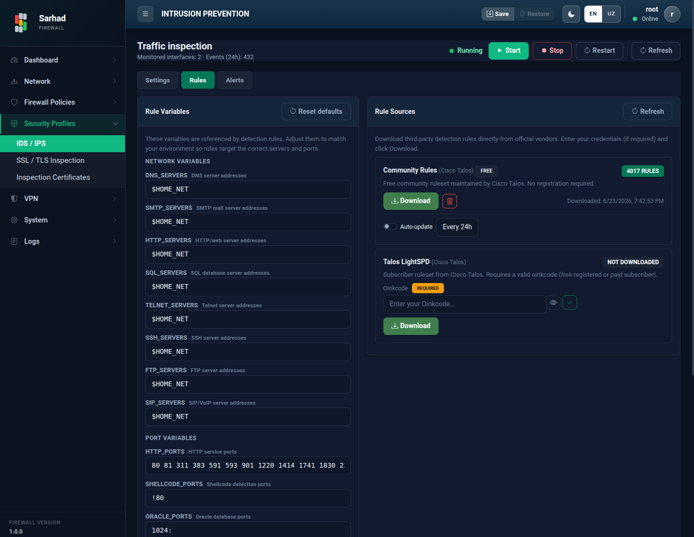
Bu tabda tayyor qoidalar to’plamlari (rule sources) yuklab olinadi va yangilab turiladi:
Community — bepul, ochiq qoidalar to’plami (kalit talab qilmaydi).
Talos — kengaytirilgan qoidalar to’plami (obuna kaliti talab qilishi mumkin; kalitni manba kartasidagi maydonga kiriting).
Har bir manba uchun:
Download tugmasini bosib qoidalarni yuklab oling. Holat ko’rsatkichi
yuklangan qoidalar sonini (N rules) yoki Not downloaded ni ko’rsatadi.
Auto-update tugmachasini yoqib, yangilanish oralig’ini (Every 6h,
12h yoki 24h) tanlang — shunda qoidalar muntazam avtomatik
yangilanib turadi.

Alerts tabida tizim aniqlagan barcha hodisalar jadval ko’rinishida ko’rsatiladi. Ustunlar:
Ustun |
Tavsifi |
|---|---|
Time |
Hodisa sodir bo’lgan sana va vaqt. |
Pri |
Muhimlik darajasi (priority). Raqam qancha kichik bo’lsa, tahdid shuncha jiddiy. |
ID |
Ishga tushgan qoidaning identifikatori (signature ID / SID). |
Proto |
Hodisaga tegishli protokol (TCP, UDP, ICMP va h.k.). |
Source |
Trafikning manba IP manzili (va porti) — hujum qayerdan kelgani. |
Destination |
Trafikning manzil IP manzili (va porti) — nishon. |
Action |
Tizim bajargan amal: |
Message |
Hodisaning tavsifi — qaysi tahdid yoki holat aniqlangani. |
Ogohlantirishlarni ko’rib chiqib, takror yoki noto’g’ri (false positive) qoidalarni sozlash orqali tizimni aniqlashtirib borish mumkin.
Note
IPS rejimida (Drop / Reject) noto’g’ri sozlangan qoidalar haqiqiy
(zararsiz) trafikni ham bloklab qo’yishi mumkin. Shu sababli yangi
qoidalarni avval Log (alert) rejimida sinab ko’rib, ishonch hosil
qilgandan so’ng bloklash rejimiga o’tkazish tavsiya etiladi.
Bugungi kunda internet trafigining katta qismi shifrlangan (HTTPS/TLS).
Bu xavfsizlikni oshiradi, biroq zararli dasturlar ham o’z aloqasini shu
shifr ostida yashirishi mumkin. TLS Interception funksiyasi shifrlangan
trafikni vaqtincha ochadi, tekshiradi va qaytadan shifrlaydi — natijada
IDS/IPS va filtrlash tizimlari shifrlangan trafik ichini ham ko’ra oladi.
Bu bo’limga o’tish uchun chap menyudagi Security → TLS Interception
bo’limini tanlang (/tls-interception).
TLS Interception “o’rtadagi ishonchli vositachi” (man-in-the-middle) tamoyili asosida ishlaydi:
Mijoz qurilmasi HTTPS sayt bilan bog’lanishga harakat qiladi.
Sarhad NGFW bu ulanishni ushlaydi: mijozga o’z sertifikati bilan, haqiqiy saytga esa alohida ulanadi.
Trafik tizim ichida ochiladi va tekshiriladi, so’ngra qaytadan shifrlanadi.
Funksiya ishlashi uchun mijoz qurilmalariga tizimning CA sertifikati ishonchli sifatida o’rnatilgan bo’lishi shart (qarang: Tekshiruv sertifikatlari (Inspection Certificates)).

TLS Interception sahifasiga o’ting va funksiyani yoqing (Enable).
Quyidagilarni sozlang:
Network Interfaces — tekshiriladigan LAN interfeyslarini tanlang. Har bir tanlangan interfeys uchun manba tarmoq (subnet) maydoni interfeysning o’z tarmog’i bilan avtomatik to’ldiriladi; kerak bo’lsa, uni o’zgartirib, aniq mijoz/manba tarmog’ini ko’rsating.
Intercept Ports — tekshiriladigan portlar (masalan, 443 — HTTPS).
QUIC block — QUIC (HTTP/3, UDP) portlarini bloklaydi. Bu brauzerlarni tekshirib bo’ladigan oddiy HTTPS (TCP) ga qaytishga majbur qiladi.
URL Exclusions — tekshiruvdan istisno qilinadigan URL yoki domenlar (masalan, bank yoki sog’liqni saqlash saytlari). Ko’p manzilni Bulk Import orqali bir vaqtda qo’shish mumkin.
O’zgarishlarni kuchga kiritish uchun Apply tugmasini bosing. Saqlanmagan o’zgarishlar “Unsaved changes” deb belgilanadi; ularni Reset tugmasi bilan bekor qilish mumkin.
Note
Trafikni qaytadan shifrlash uchun CA sertifikati kerak. CA sertifikati alohida sahifada yaratiladi va tekshiriladigan interfeyslarga biriktiriladi (qarang: Tekshiruv sertifikatlari (Inspection Certificates)).
Warning
TLS Interception maxfiylikka ta’sir qiluvchi sezgir funksiya. Uni yoqishdan oldin tashkilotingizning xavfsizlik siyosati va qonuniy talablarga rioya qilinayotganiga ishonch hosil qiling. Bank va sog’liqni saqlash kabi maxfiy saytlar trafigini tekshirishdan istisno qilish tavsiya etiladi.
Note
Ba’zi ilovalar sertifikatni qattiq tekshiradi (certificate pinning) va TLS Interception yoqilganda ishlamay qolishi mumkin. Bunday ilovalar uchun istisno (bypass) qoidalarini qo’shing.
Bu sahifa TLS trafigini tekshirish (TLS trafigini tekshirish (TLS Interception)) uchun
ishlatiladigan CA sertifikatlarini boshqaradi. Sertifikat yaratiladi (yoki
yuklanadi) va LAN interfeyslariga biriktiriladi (attach). Bu bo’limga o’tish
uchun chap menyudan Security → Inspection Certificates bo’limini tanlang
(/certificates).

CA (Certificate Authority) — sertifikat beruvchi markaz. CA boshqa sertifikatlarni imzolaydi va ularning haqiqiyligini kafolatlaydi.
CRL (Certificate Revocation List) — bekor qilingan sertifikatlar ro’yxati.
Note
VPN ulanishlari uchun CA va server/mijoz sertifikatlari alohida sahifada boshqariladi (qarang: Sertifikat markazlari (PKI / Authorities)).
Sertifikatlar ro’yxatida har biri uchun Name (nom), Subject (CN), Valid until (amal qilish muddati) va Attached to (qaysi interfeyslarga biriktirilgani) ko’rsatiladi.
Add certificate tugmasini bosing. Sertifikatni ikki usulda olish mumkin:
Yangi CA yaratish (Generate) — tizim yangi CA sertifikatini o’zi yaratadi.
Mavjud CA’ni yuklash (Upload CA bundle) — tayyor sertifikatni yuklang:
Certificate name — sertifikatga nom bering.
PEM file — PEM formatidagi sertifikat faylini tanlang.
Upload tugmasini bosing.
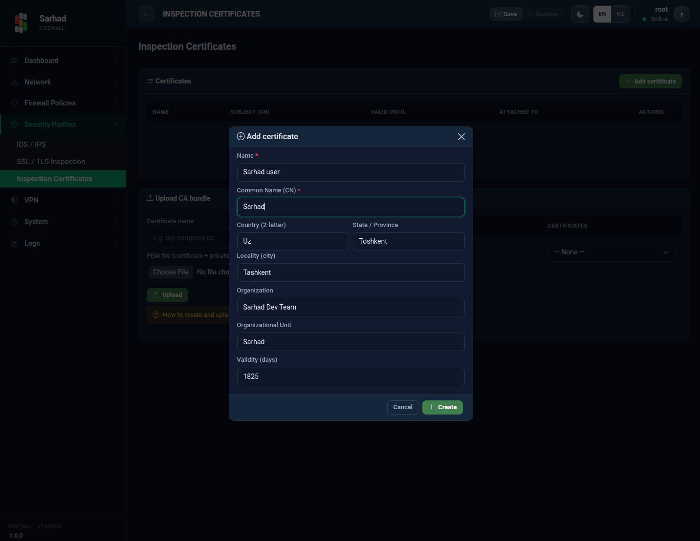
Sertifikat yaratilgandan so’ng uni tekshiriladigan LAN interfeyslariga biriktirish kerak. Attach certificate to LAN interfaces bo’limida:
Interface — sertifikat biriktiriladigan interfeysni tanlang.
Certificate — biriktiriladigan sertifikatni tanlang.
Biriktirishni tasdiqlang.
Biriktirilgan interfeyslar ro’yxatdagi Attached to ustunida ko’rinadi. Endi shu interfeyslardan o’tuvchi TLS trafigi tekshiriladi.
Tekshiruv ishlashi uchun CA sertifikatining ochiq qismini (faqat ommaviy sertifikat, maxfiy kalitni emas) barcha mijoz qurilmalariga ishonchli (trusted) sifatida o’rnating. Aks holda foydalanuvchilar brauzerda sertifikat xatoliklarini ko’radi.
VPN ulanishlari ochiq internet orqali xavfsiz, shifrlangan tunnel yaratadi.
Sarhad NGFW IKEv2 / IPsec protokoliga asoslangan ikki turdagi VPN’ni
qo’llab-quvvatlaydi. Bu bo’limga o’tish uchun chap menyudan VPN → Dashboard
bo’limini tanlang (/vpn).
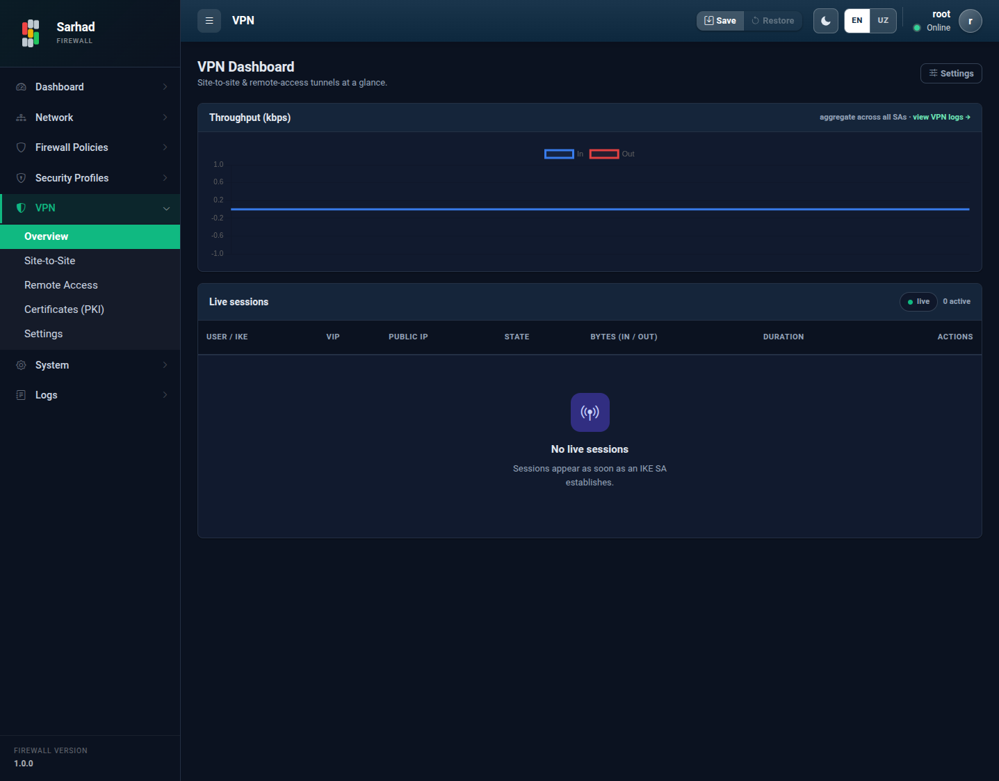
VPN Dashboard — kuzatuv (monitoring) sahifasi. U yerda ulanishlar sozlanmaydi, balki ayni paytdagi faol sessiyalar va trafik real vaqtda kuzatiladi. Sahifa har 5 soniyada avtomatik yangilanadi.
Tur |
Tavsifi |
|---|---|
Remote Access (RA) |
Alohida foydalanuvchilar o’z qurilmasidan korporativ tarmoqqa ulanadi. IKEv2 + EAP (foydalanuvchi nomi/parol) autentifikatsiyasi ishlatiladi. Qarang: Remote Access VPN (Masofaviy kirish). |
Site-to-Site (S2S) |
Ikki ofis tarmog’ini doimiy IKEv2 tunnel bilan bog’laydi. Qarang: Site-to-Site VPN (Ofislararo tunnel). |
Sahifaning yuqorisidagi Throughput (kbps) grafigi barcha SA (Security Association) lar bo’yicha jami trafikni ko’rsatadi:
In — kiruvchi trafik (kbit/s).
Out — chiquvchi trafik (kbit/s).
Grafik RA va S2S ulanishlarining umumiy o’tkazuvchanligini real vaqtda aks ettiradi.
Live sessions jadvalida ayni paytda o’rnatilgan barcha IKE SA’lar ko’rsatiladi. Ustunlar:
Ustun |
Tavsifi |
|---|---|
User / IKE |
RA sessiyasi uchun — foydalanuvchi nomi (EAP ID) va u ulangan gateway nomi. S2S uchun — tunnel (IKE ulanish) nomi. |
VIP |
RA mijoziga manzillar pulidan berilgan virtual IP. S2S uchun bo’sh
( |
Public IP |
Mijoz yoki masofaviy peer’ning tashqi (WAN) IP manzili. |
State |
IKE SA holati: Established (o’rnatilgan), Connecting (ulanmoqda), Rekeying (kalit yangilanmoqda), Deleting (uzilmoqda). |
Bytes (in / out) |
Shu sessiyada uzatilgan va qabul qilingan ma’lumot hajmi. |
Duration |
Sessiya o’rnatilganidan beri o’tgan vaqt. |
Actions |
Sessiyani majburan uzish (Disconnect) tugmasi. |
Note
Terminlar haqida qisqacha: IKE SA — boshqaruv kanali (kalit almashinuvi); Child SA (ESP) — haqiqiy ma’lumotni shifrlovchi tunnel. Bitta IKE SA ostida bir nechta Child SA bo’lishi mumkin; jadvaldagi baytlar ularning yig’indisidir.
VPN’ni sozlashdan oldin quyidagilarni tayyorlang:
Sertifikatlar (PKI) — VPN autentifikatsiyasi uchun CA va server sertifikatlari. Qarang: Sertifikat markazlari (PKI / Authorities).
WAN interfeysi — VPN tashqi ulanishlarni qabul qiladigan interfeys.
Global sozlamalar — shifrlash va vaqt parametrlari. Qarang: VPN umumiy sozlamalari (Settings).
Keyingi qadamlar: Remote Access VPN (Masofaviy kirish) (masofaviy foydalanuvchilar), Site-to-Site VPN (Ofislararo tunnel) (ofislararo tunnel).
Remote Access (RA) VPN alohida foydalanuvchilarga o’z qurilmasidan (noutbuk,
telefon) korporativ tarmoqqa xavfsiz ulanish imkonini beradi. Ulanish IKEv2
protokoli va EAP (foydalanuvchi nomi/parol) autentifikatsiyasi asosida
ishlaydi. Bu bo’limga o’tish uchun chap menyudan VPN → Remote Access
bo’limini tanlang (/vpn/ra).
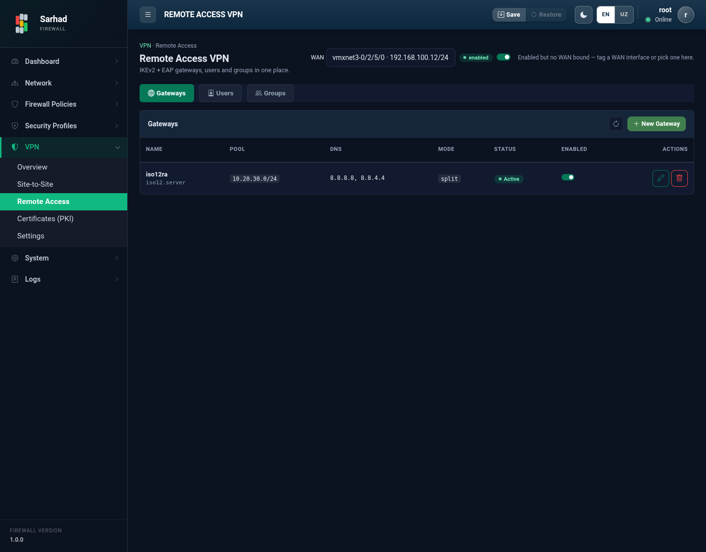
Sahifa uch tabdan iborat: Gateways (kirish nuqtalari), Users (foydalanuvchilar) va Groups (guruhlar).
Sahifaning yuqorisida umumiy boshqaruv elementlari joylashgan:
Enable VPN stack — VPN tizimini yoqadigan/o’chiradigan asosiy tugmacha. O’chirilgan holatda hech bir gateway mijozlarni qabul qilmaydi.
WAN — VPN tashqi ulanishlarni tinglaydigan interfeys (standart holatda “Auto — first WAN”). Bu interfeysni faqat VPN stek o’chirilgan holatda o’zgartirish mumkin.
Holat satrida tizim qaysi interfeysda tinglayotgani ko’rsatiladi.
Gateway — foydalanuvchilar ulanadigan kirish nuqtasi. Gateways tabida New Gateway tugmasini bosing va quyidagilarni to’ldiring.
Maydon |
Tavsifi |
|---|---|
Name |
Gateway nomi (masalan, |
Server certificate |
Gateway o’zini tasdiqlaydigan server sertifikati (PKI’dan tanlanadi; imzolagan CA avtomatik biriktiriladi). Qarang: Sertifikat markazlari (PKI / Authorities). |
Virtual-IP pool |
Ulangan mijozlarga beriladigan ichki IP manzillar diapazoni, CIDR
ko’rinishida (masalan, |
Route mode |
Split-tunnel — faqat ko’rsatilgan ichki tarmoqlarga trafik VPN orqali ketadi (standart). Full-tunnel — mijozning butun trafigi VPN orqali o’tadi. |
Public address — mijozlar ulanadigan tashqi manzil yoki domen nomi
(masalan, vpn.example.com). Mijoz konfiguratsiyasiga yoziladi.
Listen interface — IKE tinglovchi aniq WAN interfeysi (bo’sh qoldirilsa, barcha WAN interfeyslari).
DNS servers — mijozlarga beriladigan DNS manzillari (Cloudflare, Google, Quad9 uchun tezkor tugmalar mavjud).
Reachable LAN/DMZ interfaces — mijozlar kira oladigan ichki interfeyslar; split-tunnel rejimida ularning tarmoqlari mijozga marshrut sifatida yuboriladi.
Crypto profile — shifrlash to’plami. Standart “Recommended” qiymati global sozlamalardan (VPN umumiy sozlamalari (Settings)) olinadi; kerak bo’lsa “Custom” orqali IKE/ESP proposal va vaqtlarni qo’lda kiriting.
Saqlangach, gateway jadvalidagi Enabled ustuni orqali uni yoqing.
Guruhlar foydalanuvchilarni birlashtiradi va ularga umumiy siyosat beradi. Groups tabida New Group tugmasini bosib quyidagilarni belgilang:
Maydon |
Tavsifi |
|---|---|
Name |
Guruh nomi (masalan, |
Route mode |
Split-tunnel yoki full-tunnel. |
Allowed subnets |
Guruh a’zolari kira oladigan ichki tarmoqlar (har qatorda bitta CIDR). |
Allowed protocols |
Ruxsat etilgan protokol/portlar (masalan, |
Idle timeout (s) |
Faolsizlikdan so’ng sessiyani uzish vaqti (0 — cheksiz). |
Max concurrent |
Bir a’zo uchun bir vaqtdagi maksimal sessiyalar soni (0 — cheksiz). |
Users tabida New User tugmasini bosing:
Username — kirish nomi (yaratilgandan keyin o’zgartirib bo’lmaydi).
Password — parol (kamida 8 belgi; Generate tugmasi bilan kuchli parol yaratish mumkin).
Group — foydalanuvchi qaysi guruhga tegishli (ixtiyoriy).
Gateway — qaysi gateway’ga biriktirilishi (ixtiyoriy; bo’sh qoldirilsa, birinchi yoqilgan gateway).
Qo’shimcha (overrides) bo’limida bu foydalanuvchi uchun Static virtual IP, Expires at (amal qilish muddati) hamda ruxsat etilgan tarmoq/protokollarni alohida belgilash mumkin.
Har bir foydalanuvchi yonidagi yuklab olish tugmasi orqali uning qurilmasi uchun tayyor konfiguratsiya faylini olasiz. Platforma bo’yicha to’rt format mavjud:
Platforma |
Fayl |
|---|---|
iOS / macOS |
|
Windows |
|
Linux |
|
Android |
|
Har bir yuklab olishda mijoz uchun yangi sertifikat yaratiladi va uning
.p12 paroli ko’rsatiladi. Faylni foydalanuvchiga xavfsiz yo’l bilan
yetkazing.
Foydalanuvchi qatorida quyidagi amallar mavjud: tahrirlash, parolni yangilash (rotate), yoqish/o’chirish va o’chirish. Faol sessiyalarni VPN — Umumiy ko’rinish (Dashboard) (VPN Dashboard) sahifasida kuzatish va kerak bo’lsa uzish mumkin.
Note
Foydalanuvchi parolini yangilasangiz yoki hisobini o’chirsangiz, uning faol sessiyasini ham uzishni unutmang — aks holda u keyingi qayta ulanishigacha tarmoqda qoladi.
Site-to-Site (S2S) VPN ikki tarmoqni (masalan, bosh ofis va filial) internet
orqali doimiy IKEv2 / IPsec tunnel bilan bog’laydi. Ikkala tomon
foydalanuvchilari xuddi bitta lokal tarmoqdagidek aloqa qila oladi. Bu bo’limga
o’tish uchun chap menyudan VPN → Site-to-Site bo’limini tanlang
(/vpn/s2s).
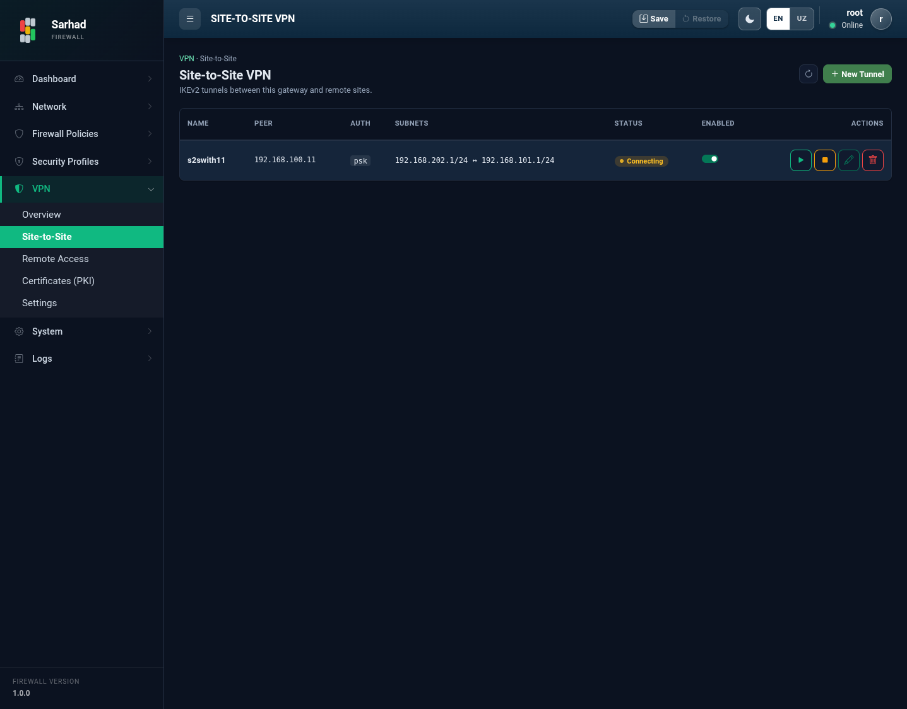
New Tunnel tugmasini bosing va quyidagi maydonlarni to’ldiring.
Maydon |
Tavsifi |
|---|---|
Name |
Tunnel nomi (masalan, |
Auth |
Autentifikatsiya usuli: Pre-shared key (umumiy maxfiy kalit), RSA certificate yoki ECDSA certificate. |
Enabled |
Tunnelni darhol yoqish belgisi. |
Remote gateway(s) |
Masofaviy (peer) qurilmaning ommaviy IP yoki domen nomi. Har qatorda bittadan — bir nechtasi failover (zaxira) sifatida ishlatiladi. |
Listen on (this side) |
Bu tomon tinglaydigan WAN interfeysi (standart “Any interface” ko’pchilik holatda yetarli). |
Pre-shared key |
(Agar Auth = PSK bo’lsa) umumiy maxfiy kalit. Ikkala tomonda bir xil va kamida 16 belgidan iborat bo’lishi shart. Generate tugmasi bilan yaratish mumkin. |
Server certificate |
(Agar Auth = sertifikat bo’lsa) PKI’dan server sertifikati. Qarang: Sertifikat markazlari (PKI / Authorities). |
Local subnets |
Bu tomondagi (mahalliy) tarmoqlar, har qatorda bitta CIDR. |
Remote subnets |
Narigi tomondagi (masofaviy) tarmoqlar, har qatorda bitta CIDR. |
Bu tarmoqlar traffic selector vazifasini bajaradi: faqat Local va Remote tarmoqlar o’rtasidagi trafik IPsec orqali shifrlanadi.
Crypto profile — shifrlash to’plami. Standart “Recommended” qiymati global sozlamalardan olinadi (VPN umumiy sozlamalari (Settings)).
Show advanced ostida: Mode (Policy-based yoki Route-based), Role (Auto — ham boshlaydi ham qabul qiladi, yoki Responder only — faqat qabul qiladi), IKE/ESP proposal, lifetime va DPD parametrlari.
Important
Tunnel ishlashi uchun ikkala tomon sozlamalari bir-biriga mos kelishi shart:
Bir tomonning Local subnets i ikkinchi tomonning Remote subnets i bo’lishi (ya’ni teskari).
Auth usuli bir xil; PSK ishlatilsa, kalit aynan bir xil.
Shifrlash proposal’lari mos kelishi.
Yaratilgan tunnellar jadvalda Name, Peer, Auth, Subnets, Status va Enabled ustunlari bilan ko’rsatiladi. Har bir tunnel uchun amallar:
Enabled belgisi — tunnelni yoqish yoki o’chirish.
Initiate — IKE ulanishini qo’lda boshlash (tunnel “Connecting” da qotib qolsa foydali).
Terminate — IPsec SA’ni qo’lda tushirish (konfiguratsiya saqlanadi).
Edit / Delete — tahrirlash yoki o’chirish.
Holat |
Ma’nosi |
|---|---|
Up |
Tunnel faol, trafik shifrlanmoqda. |
Connecting |
Tunnel yoqilgan, ulanish o’rnatilmoqda. |
Down |
Tunnel yoqilgan, lekin faol SA yo’q (peer mavjud emas yoki Terminate bosilgan). |
Failed |
Ulanish urinishi muvaffaqiyatsiz (odatda sozlamalar mos kelmaganda). |
Disabled |
Tunnel o’chirilgan (Enabled belgisi olib tashlangan). |
Note
Tunnel “Down” yoki “Failed” da qolsa, eng ko’p uchraydigan sabablar: ikki tomondagi shifrlash proposal’larining mos kelmasligi, noto’g’ri PSK, teskari yozilmagan subnetlar, yoki WAN firewall’i IPsec portlarini (UDP 500 va 4500) bloklab qo’ygani.
Bu sahifa VPN ulanishlarini autentifikatsiya qilish uchun CA va sertifikatlarni
boshqaradi. Bu bo’limga o’tish uchun chap menyudan VPN → Authorities
bo’limini tanlang (/pki/authorities). Sahifa ikki qismdan iborat:
Certificate Authorities (CA’lar) va Issued Certificates (berilgan
sertifikatlar).
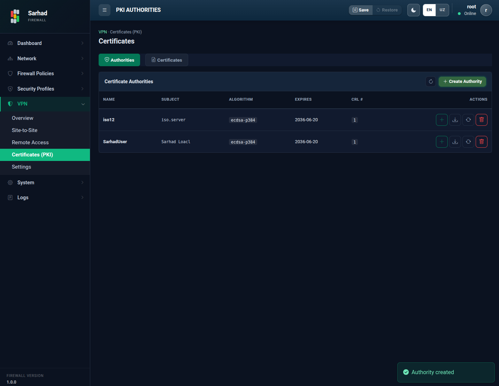
CA (Certificate Authority) — sertifikat beruvchi markaz. CA boshqa sertifikatlarni imzolaydi va ularning haqiqiyligini kafolatlaydi.
Server sertifikati — server (masalan, VPN gateway) o’zini tasdiqlash uchun ishlatadigan sertifikat.
Mijoz sertifikati — foydalanuvchi yoki peer’ni tasdiqlash uchun ishlatiladigan sertifikat.
CRL (Certificate Revocation List) — bekor qilingan sertifikatlar ro’yxati.
Create (Authority) tugmasini bosing.
Quyidagilarni kiriting:
Name — CA’ning ichki nomi (masalan, primary).
Subject (CN) — CA nomi (masalan, Sarhad Local CA).
Key algorithm — kalit algoritmi.
Validity (days) — amal qilish muddati (kunlarda).
Qo’shimcha: Country, Organization, State/Province, Locality, Organizational Unit.
Create tugmasini bosing.
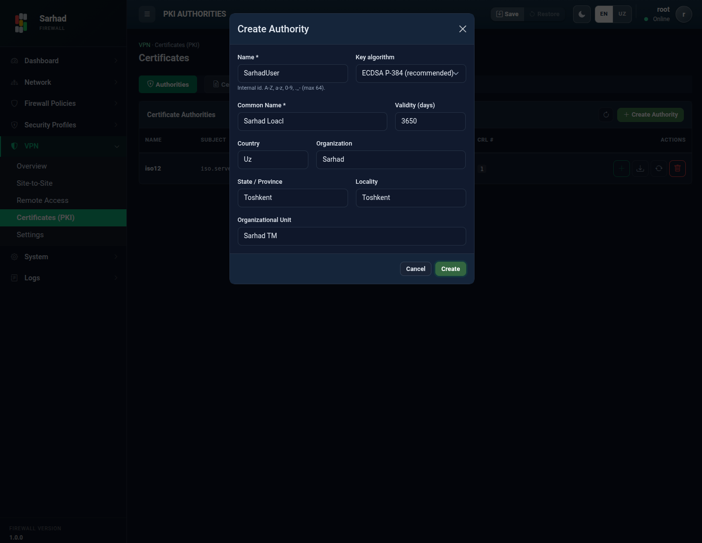
CA yaratilgach, undan sertifikat berish mumkin:
Issue (certificate) tugmasini bosing.
Type — sertifikat turini tanlang:
Server — IKE (VPN) gateway uchun.
Client — foydalanuvchi yoki peer uchun.
Signer CA — sertifikatni imzolaydigan CA’ni tanlang.
Common Name (masalan, vpn.sarhad.local) va amal qilish muddatini
kiriting. Kerak bo’lsa DNS SANs, IP SANs, Email kabi qo’shimcha
maydonlarni to’ldiring.
Sertifikatni bering.
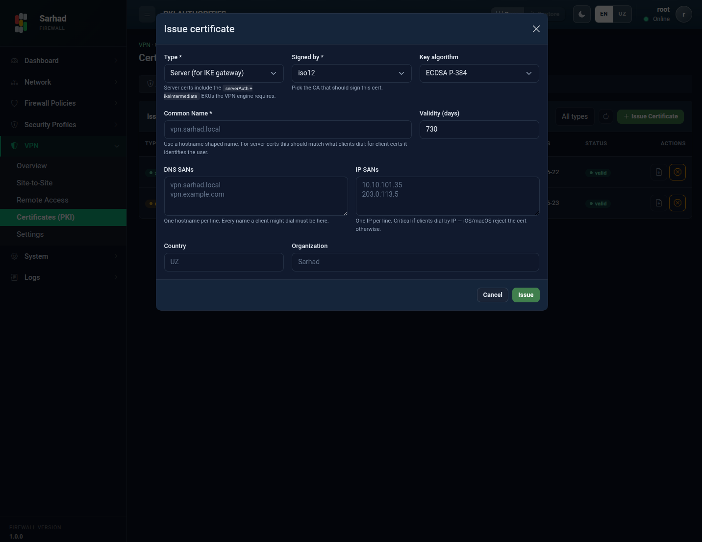
Berilgan sertifikatlar Issued Certificates ro’yxatida turi, Common Name, imzolagan CA va holati bilan ko’rsatiladi. Sertifikatni yuklab olish (download) yoki VPN sozlamalarida ishlatish mumkin.

Agar sertifikat xavf ostida qolsa yoki endi kerak bo’lmasa, uni ro’yxatdan tanlab Revoke tugmasini bosing. Bekor qilingan sertifikat CRL’ga qo’shiladi va undan keyin ishonchsiz deb hisoblanadi.
Note
CA’ning maxfiy kalitini xavfsiz saqlang. Agar maxfiy kalit o’g’irlansa, tajovuzkor soxta sertifikatlar yaratishi mumkin. Shubha tug’ilsa, CA’ni bekor qiling va yangisini yarating.
Bu sahifa barcha VPN ulanishlariga (Remote Access va Site-to-Site) standart
qiymat sifatida qo’llaniladigan global parametrlarni boshqaradi. Alohida
gateway yoki tunnel bu qiymatlarni o’zining sozlamalari bilan almashtirishi
mumkin. Bu bo’limga o’tish uchun chap menyudan VPN → Settings bo’limini
tanlang (/vpn/settings).

Crypto profile har bir tunnel uchun standart IKE va ESP proposal’larini tanlaydi:
Profil |
Tavsifi |
|---|---|
Modern |
Faqat zamonaviy algoritmlar: AES-256-GCM, ECP384. Eng xavfsiz, lekin peer ham zamonaviy bo’lishini talab qiladi. |
Compatible |
Zamonaviy algoritmlar + MODP3072 zaxira varianti. Ko’pchilik qurilmalar bilan mos. |
Legacy |
Eskirgan algoritmlar (3DES, SHA1, MODP1024). Xavfsiz emas — faqat yangilab bo’lmaydigan eski uskunalar uchun. |
Custom |
IKE va ESP proposal’larini hamda vaqtlarni qo’lda kiritish. |
Custom rejimida IKE proposal (autentifikatsiya bosqichi) va ESP
proposal (ma’lumotni shifrlash bosqichi) ni vergul bilan ajratib kiritasiz
(masalan, aes256gcm16-prfsha384-ecp384).
Sozlama |
Tavsifi |
|---|---|
IKE lifetime (s) |
IKE SA (boshqaruv kanali) amal qilish muddati. Standart: |
ESP lifetime (s) |
Child SA (ma’lumot tunneli) amal qilish muddati. Standart: |
Rekey margin (s) |
Kalit muddat tugashidan necha sekund oldin yangilanishi. Standart:
|
DPD delay (s) |
Dead Peer Detection — peer’ni tekshirish oralig’i. Standart: |
DPD timeout (s) |
Peer javob bermasa, uni “o’lik” deb hisoblash vaqti. Standart: |
DPD action |
Peer javob bermaganda nima qilish: |
NAT traversal (NAT-T) |
NAT ortidagi peer’lar uchun UDP 4500 inkapsulyatsiyasi: |
Fragmentation |
IKE paketlarini bo’laklash: |
MOBIKE |
Mijoz IP manzili o’zgarganda (masalan, Wi-Fi’dan mobil internetga) ulanishni uzmasdan davom ettirish (RFC 4555). Mobil mijozlar uchun foydali. |
Allow legacy crypto |
Eskirgan zaif algoritmlarga ruxsat berish. Standart holatda o’chirilgan (tavsiya etiladi). |
Bu maydonlar yangi RA gateway yaratishda avtomatik to’ldiriladi (har bir gateway ularni o’zgartirishi mumkin):
Default virtual-IP pool — RA mijozlariga beriladigan IP diapazoni
(masalan, 10.10.10.0/24).
Default DNS — mijozlarga beriladigan DNS manzillari.
Default banner — mijozga autentifikatsiyadan oldin ko’rsatiladigan xabar (masalan, foydalanish siyosati).
Save — o’zgarishlarni saqlaydi va kuchga kiritadi.
Reset to defaults — barcha sozlamalarni zavod (tavsiya etilgan) qiymatlariga qaytaradi (saqlash uchun keyin Save ni bosish kerak).
Note
Shifrlash sozlamalarini o’zgartirishda ehtiyot bo’ling: Remote Access mijozlari va Site-to-Site peer’lari bu algoritmlarni qo’llab-quvvatlashi shart. Mos kelmaslik ulanishlarni uzadi. Shubha tug’ilsa, Modern yoki Compatible profilini qoldiring.
Bu sahifa boshqaruv paneliga kirish huquqiga ega foydalanuvchi hisoblarini
boshqaradi. Bu bo’limga o’tish uchun chap menyudan System → Firewall Users
bo’limini tanlang (/user-mgmt).

Tizimda uchta rol mavjud. Har bir rol turli ruxsat va ko’rish darajasiga ega:
Rol |
Ruxsatlari |
Ko’rish darajasi |
|---|---|---|
Root |
Foydalanuvchilarni to’liq boshqarish (Full user-management access): hisob yaratish, tahrirlash, o’chirish, har qanday nom va parolni o’zgartirish. |
Barcha hisoblarni ko’radi. |
Admin |
Faqat firewall konfiguratsiyasiga kirish (Firewall configuration access
only). Faqat |
Faqat |
Read-only |
Faqat ko’rish (View-only access): holat va sozlamalarni ko’radi, lekin o’zgartira olmaydi. |
Foydalanuvchilar ro’yxatini umuman ko’ra olmaydi. |
Tizimda faqat bitta root foydalanuvchi mavjud va u tizimning standart egasi.
Root o’z va boshqa foydalanuvchilarning nomlari va parollarini o’zgartira oladi.
Boshqa adminlar foydalanuvchi boshqaruvida nom va parollarni o’zgartira olmaydi.
Read-only foydalanuvchilar tizimdagi hech qanday foydalanuvchini ko’ra olmaydi.
Accounts jadvalida ko’rinadigan foydalanuvchilar ro’yxati keltiriladi: Username (nom), Role (rol), Permissions (ruxsatlar), Updated (oxirgi o’zgarish) va Actions (amallar). Joriy sessiya alohida belgilanadi.
Add User tugmasini bosing.
Create User oynasida quyidagilarni kiriting:
Role — Admin yoki Read-only (root tomonidan yaratiladi;
admin faqat Read-only qo’sha oladi).
Username — kirish nomi.
Password — parol.
Create tugmasini bosing.
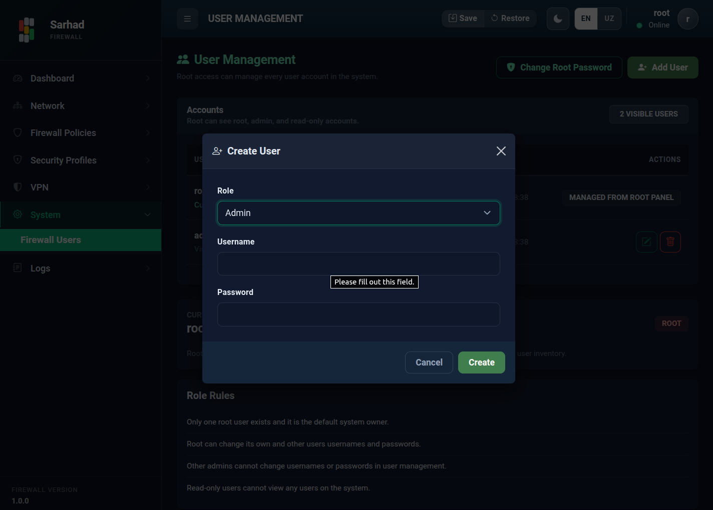
Hisob yonidagi tahrirlash tugmasi orqali Edit User oynasi ochiladi. U yerda Role va Username ni o’zgartirish hamda New Password kiritish mumkin. Parol maydonini bo’sh qoldirsangiz, joriy parol o’zgarmaydi.
Root o’z parolini Change Root Password tugmasi orqali o’zgartiradi.
Texnik yordam zarur bo’lganda, root foydalanuvchi vaqtinchalik SSH kirishni yoqishi mumkin. Bu Support paneli orqali amalga oshiriladi (faqat root uchun) va xavfsizlik yuzasidan 4 soatdan keyin avtomatik o’chadi (Enable SSH (4h)). Yordam tugagach, uni qo’lda ham o’chirib qo’yish tavsiya etiladi.
Warning
So’nggi root hisobini o’chirib qo’ymang — aks holda tizimni boshqarish imkoniyatini butunlay yo’qotasiz.
Standart parolni birinchi kirishdayoq o’zgartiring.
Kuchli parollardan foydalaning: kamida 12 ta belgi, katta-kichik harflar, raqamlar va maxsus belgilar aralashmasi.
Har bir xodimga alohida hisob bering — umumiy hisoblardan foydalanmang.
Faqat zarur huquqlarni bering: ko’rish kifoya qilsa, Read-only rolini
tanlang.
Kirish/chiqish faoliyati Jurnallar (Logs) bo’limida qayd etiladi — uni muntazam tekshirib turing.
Note
Sessiyalar xavfsizlik uchun ma’lum vaqtdan keyin avtomatik tugaydi. Faolsizlikdan so’ng tizim qayta kirishni so’rashi mumkin.
Sarhad NGFW tizimda sodir bo’layotgan barcha muhim hodisalarni batafsil yozib
boradi. Jurnallar tizim faoliyatini kuzatish, muammolarni aniqlash va
xavfsizlik tekshiruvlari uchun zarur. Bu bo’limga o’tish uchun chap menyudan
Logs guruhini oching (/logs).
Jurnallar turlar bo’yicha ajratilgan — har bir turi chap menyudagi alohida bo’lim orqali ochiladi va o’ziga xos ustunlarga ega.
Firewall qoidalari tomonidan bloklangan (drop) yoki ruxsat etilgan trafik hodisalari.

Ustunlar: Time (vaqt), Action (amal — permit/deny), Protocol, Source (manba), Destination (manzil), Packets (paketlar soni), Details (tafsilotlar).
TLS tekshiruvi (TLS trafigini tekshirish (TLS Interception)) yoqilgan interfeyslarda ko’rilgan veb-manzillar jurnali.

Ustunlar: Time, Interface, Method (GET/POST), Client IP (mijoz IP), Host (sayt), URL Path (manzil yo’li), Status (HTTP holati).
Konfiguratsiyadagi o’zgarishlar (firewall, NAT, marshrut, interfeys va h.k.).
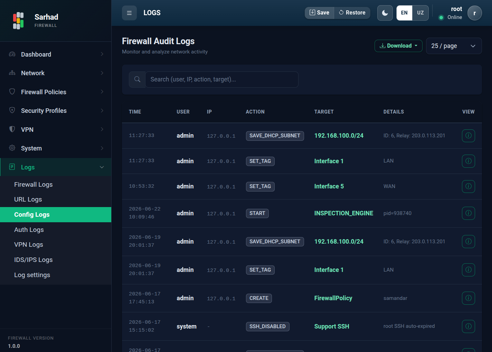
Ustunlar: Time, User (foydalanuvchi), IP, Action (amal), Target (nishon — qaysi obyekt o’zgartirildi), Details.
Tizimga kirish va chiqish hamda parol o’zgarishlari.

Ustunlar: Time, User, IP, Action (login/logout), Status (muvaffaqiyatli yoki muvaffaqiyatsiz).
VPN autentifikatsiyasi hamda sessiyalarning ochilishi va yopilishi.
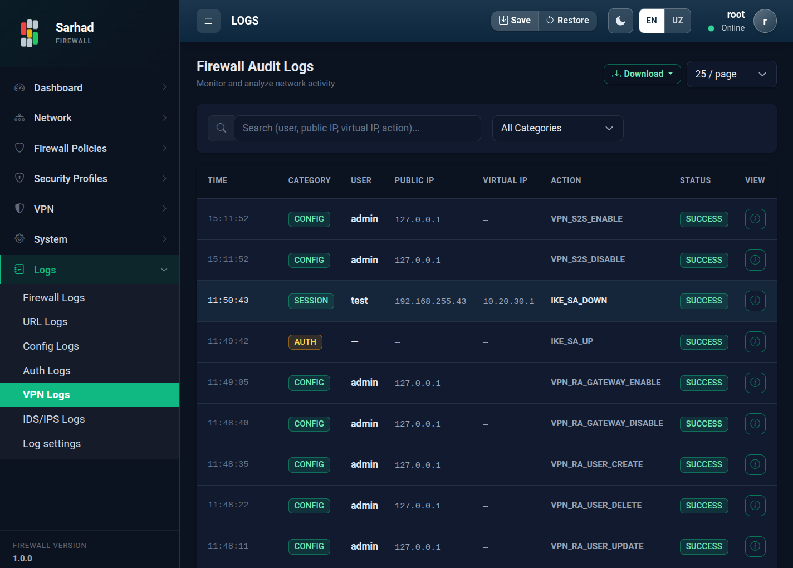
Hujumlarni aniqlash tizimi (Hujumlarni aniqlash va oldini olish (IDS/IPS)) yaratgan ogohlantirishlar.

Ustunlar: Time, Priority (muhimlik darajasi), Action, Message (tavsif), Source, Destination.
Barcha jurnal turlarida quyidagi vositalar mavjud:
Qidiruv — kalit so’z bo’yicha yozuvlarni izlash.
Sana oralig’i — boshlanish va tugash sanasini tanlab, ma’lum davr yozuvlarini ko’rish.
Protokol filtri — Firewall jurnallarini protokol bo’yicha saralash.
Tafsilotlar — yozuvning to’liq tafsilotini ko’rish uchun qatorni ikki marta bosing (yoki View tugmasini bosing).
Download — joriy jurnalni tashqi faylga yuklab olish (hisobot yoki tashqi tahlil uchun).
Jurnallar vaqt o’tishi bilan ko’p joy egallaydi. Log settings
(/logs/settings) bo’limida avtomatik tozalash siyosatini sozlash mumkin.
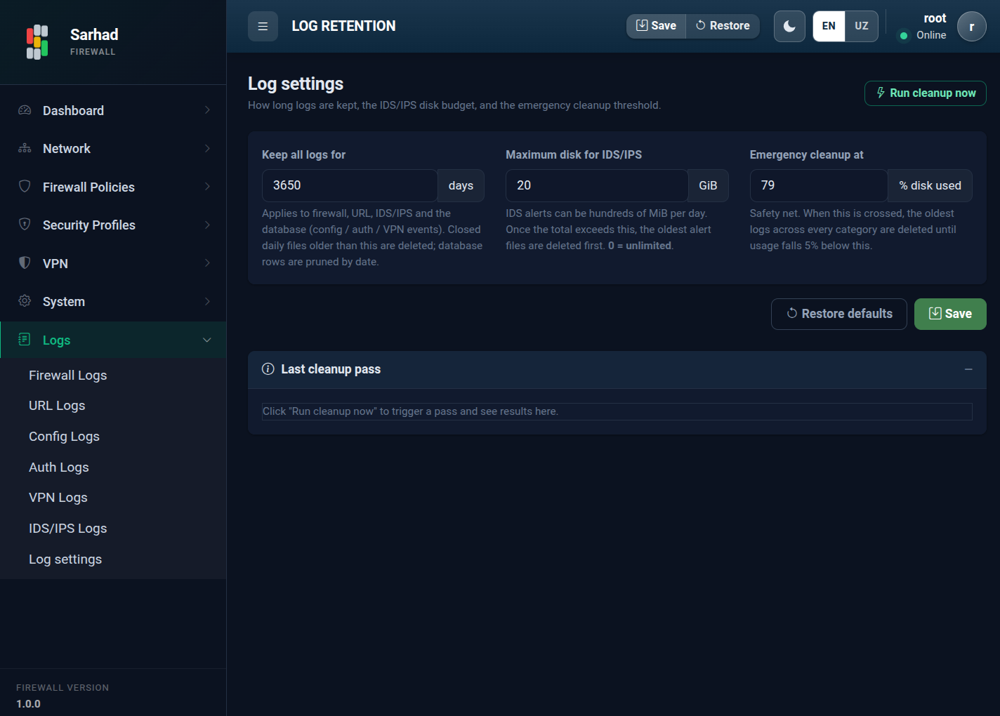
Keep all logs for … days — yozuvlar necha kun saqlanishi. Bundan eski yozuvlar avtomatik o’chiriladi.
Maximum disk for IDS/IPS … GiB — IDS/IPS jurnallari uchun ajratilgan maksimal disk hajmi.
Emergency cleanup at … % disk used — disk shu foizga to’lganda favqulodda tozalashni ishga tushirish.
Run cleanup now — eski yozuvlarni darhol qo’lda tozalash.
Save — sozlamalarni saqlash; Restore defaults — standart qiymatlarga qaytarish.
Sahifa pastida oxirgi tozalash (Last cleanup pass) qachon o’tkazilgani ko’rsatiladi.
Tip
Muvaffaqiyatsiz kirish urinishlari (Auth jurnalidagi “failure” yozuvlari) ni muntazam tekshirib turing — ko’p sonli muvaffaqiyatsiz urinishlar parolni topishga (brute-force) urinish belgisi bo’lishi mumkin.
Tarmoq trafigi statistikasi: Trafik monitoringi (Flow / IPFIX)
Xavfsizlik ogohlantirishlari (IDS/IPS): Hujumlarni aniqlash va oldini olish (IDS/IPS)
Flow monitoringi tarmoqdan o’tayotgan trafik haqida statistik ma’lumotlarni
(oqimlarni) yig’adi va ularni tashqi tahlil tizimiga yuboradi. Bu orqali
tarmoqdan kim, qayerga va qancha ma’lumot uzatayotganini ko’rish mumkin. Bu
bo’limga o’tish uchun chap menyudan Firewall → Flow Monitoring bo’limini
tanlang (/flow-monitoring).
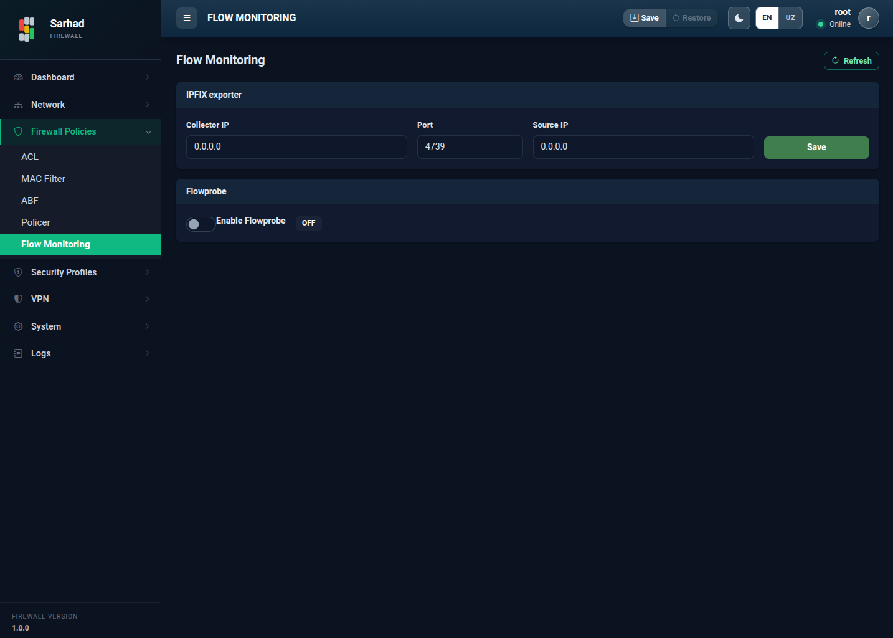
Flow (oqim) — bir xil belgilarga ega (manba/manzil IP, port, protokol) paketlar ketma-ketligi. Masalan, bitta kompyuterning bitta saytga ulanishi — bu bitta oqim.
Flowprobe — qurilma ichidagi oqimlarni yig’uvchi modul.
IPFIX — yig’ilgan oqim ma’lumotlarini standart formatda tashqi yig’uvchiga (collector) uzatish protokoli.
Collector — oqim ma’lumotlarini qabul qilib saqlaydigan va tahlil qiladigan tashqi server.
Sahifa ikki qismdan iborat: oqimlarni qayerga yuborishni belgilaydigan IPFIX exporter va oqim yig’ishni yoqadigan Flowprobe.
IPFIX exporter bo’limida oqim ma’lumotlari yuboriladigan manzilni belgilang:
Collector IP — tashqi yig’uvchi server IP manzili (masalan,
192.168.1.50).
Port — yig’uvchi server porti (IPFIX uchun odatda 4739).
Source IP — oqimlar yuboriladigan manba manzili (masalan, qurilma interfeysining IP manzili).
So’ngra Save tugmasini bosing.
Flowprobe bo’limidagi Enable Flowprobe tugmachasini yoqing. Yonidagi ko’rsatkich holatni bildiradi: On (yoqilgan) yoki Off (o’chiq).
Flowprobe yoqilgach, tizim oqimlarni yig’a boshlaydi va yuqorida ko’rsatilgan collector’ga IPFIX orqali yuboradi.
Tarmoqdan foydalanishni tahlil qilish — qaysi qurilmalar va ilovalar eng ko’p trafik hosil qilayotganini aniqlash.
Anomaliyalarni aniqlash — odatdagidan ko’p trafik xavfsizlik hodisasi (masalan, ma’lumot sizib chiqishi) belgisi bo’lishi mumkin.
Sig’imni rejalashtirish — tarmoq kanalini kengaytirish zarurligini baholash.
Note
Flow monitoringi trafik mazmunini emas, balki uning metama’lumotlarini (kim, qayerga, qancha) yig’adi. Trafik mazmunini tekshirish uchun Hujumlarni aniqlash va oldini olish (IDS/IPS) (IDS/IPS) yoki TLS trafigini tekshirish (TLS Interception) funksiyalaridan foydalaning.
{kind=link}
{kind=link}
{kind=link}
{kind=link}
{kind=link}
{kind=link}
{kind=link}
{kind=link}
{kind=link}
{kind=link}
{kind=link}
{kind=link}
{kind=link}
{kind=link}
{kind=link}
{kind=link}
{kind=link}
{kind=link}
{kind=link}
{kind=link}
{kind=link}
{kind=link}
{kind=link}
{kind=link}
{kind=link}
{kind=link}
{kind=link}